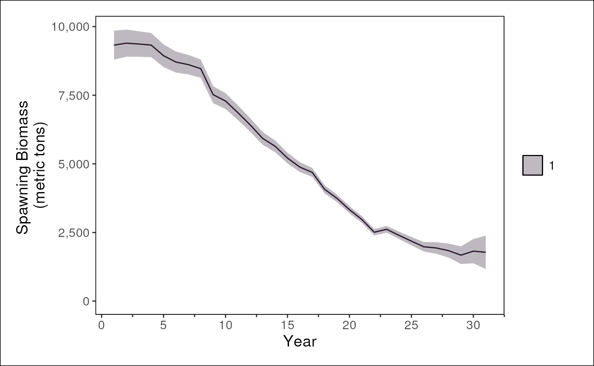

Introducing the Fisheries Integrated Modeling System (FIMS)
Source:vignettes/fims-demo.Rmd
fims-demo.RmdFIMS
The NOAA Fisheries Integrated Modeling System (FIMS) is a new modeling framework for fisheries modeling. The framework is designed to support next-generation fisheries stock assessment, ecosystem, and socioeconomic modeling. It is important to note that FIMS itself is not a model but rather a framework for creating models. The framework is made up of many modules that come together to create a model that best suits the needs of the end-user. The remainder of this vignette walks through what is absolutely necessary to run a FIMS catch-at-age model using the default settings.
Memory
Calling library(FIMS) loads the R package and Rcpp
functions and modules into the R environment. The C++ code is compiled
upon installation rather than loading so the call to
library() should be pretty fast. Users should always run
clear() prior to modeling to ensure that the C++ memory
from any previous FIMS model run is cleared out.
Data
Data for a FIMS model must be stored in a single data frame with a
long format, e.g., data("data1", package = "FIMS"). The
design is similar to running a linear model where you pass a single data
frame to lm(). The long format does lead to some
information being duplicated. For example, the units are listed for
every row rather than stored in a single location for each data type.
But, the long format facilitates using tidy functions to manipulate the
data. And, a single function, i.e., FIMSFrame(), is all
that is needed to prepare the data to be used in a FIMS model.
data1
A sample data frame for a catch-at-age model with both ages and
lengths is stored in the package as data1. This data set is
based on data that was used in Li et al. for the
Model Comparison Project (github
site). The length data have since been added data-raw/data1.R
based on an age-length conversion matrix. See R/data1.R
or ?data1 for details about the package data.
FIMSFrame()
The easiest way to prepare the data for a FIMS model is to use
FIMSFrame(). This function performs several validation
checks and returns an object of the S4 class called
FIMSFrame. There are helper functions for working with a
FIMSFrame object, e.g., get_data(),
get_n_years(), get_*(). Additionally, there
are helper functions for pulling data out of the S4 class in the format
needed for a module, i.e., a vector, but these m_*()
functions are largely meant to be used internally within the package and
are only exported to allow for their use by power users wishing to
manually set up.
# Bring the package data into your environment
data("data1")
# Prepare the package data for being used in a FIMS model
data_4_model <- FIMSFrame(data1)The S4 object that we named data_4_model contains many
slots (i.e., named components of the object that can be accessed) but
perhaps the most interesting one is the long data frame stored in the
“data” slot. The tibble stored in this slot can be accessed using
get_data().
# Use show() to see what is stored in the FIMSFrame S4 class
methods::show(data_4_model)## tbl_df of class 'FIMSFrame'## with the following 'types': age-to-length-conversion, age_comp, landings, length_comp, weight-at-age, index## # A tibble: 6 × 8
## type name age length timing value unit uncertainty
## <chr> <chr> <int> <dbl> <int> <dbl> <chr> <dbl>
## 1 age-to-length-conversion fleet1 1 0 1 1.26e-16 prop… 200
## 2 age-to-length-conversion fleet1 1 50 1 8.39e-11 prop… 200
## 3 age-to-length-conversion fleet1 1 100 1 2.30e- 6 prop… 200
## 4 age-to-length-conversion fleet1 1 150 1 2.74e- 3 prop… 200
## 5 age-to-length-conversion fleet1 1 200 1 1.63e- 1 prop… 200
## 6 age-to-length-conversion fleet1 1 250 1 6.32e- 1 prop… 200
## additional slots include the following:fleets:
## [1] "fleet1" "survey1"
## n_years:
## [1] 30
## ages:
## [1] 1 2 3 4 5 6 7 8 9 10 11 12
## n_ages:
## [1] 12
## lengths:
## [1] 0 50 100 150 200 250 300 350 400 450 500 550 600 650 700
## [16] 750 800 850 900 950 1000 1050 1100
## n_lengths:
## [1] 23
## start_year:
## [1] 1
## end_year:
## [1] 30
# Or, look at the structure using str()
# Increase max.level to see more of the structure
str(data_4_model, max.level = 1)## Formal class 'FIMSFrame' [package "FIMS"] with 9 slots
# Use dplyr to subset the data for just the landings
get_data(data_4_model) |>
dplyr::filter(type == "landings")## # A tibble: 30 × 8
## type name age length timing value unit uncertainty
## <chr> <chr> <int> <dbl> <int> <dbl> <chr> <dbl>
## 1 landings fleet1 NA NA 1 162. mt 0.0100
## 2 landings fleet1 NA NA 2 461. mt 0.0100
## 3 landings fleet1 NA NA 3 747. mt 0.0100
## 4 landings fleet1 NA NA 4 997. mt 0.0100
## 5 landings fleet1 NA NA 5 768. mt 0.0100
## 6 landings fleet1 NA NA 6 1344. mt 0.0100
## 7 landings fleet1 NA NA 7 1319. mt 0.0100
## 8 landings fleet1 NA NA 8 2598. mt 0.0100
## 9 landings fleet1 NA NA 9 1426. mt 0.0100
## 10 landings fleet1 NA NA 10 1644. mt 0.0100
## # ℹ 20 more rowsThe data contains the following fleets:
- A single fishery fleet with age- and length-composition, weight-at-age, and landings data
- A single survey with age- and length-composition and index data
configurations
create_default_configurations()
The create_default_configurations() function is designed
to generate a set of default configurations for the various components
of a FIMS model. This includes configurations for fleets, growth,
maturity, and recruitment modules. By leveraging the structure of the
input data, the function can automatically set up initial configurations
for each module. By passing the data and configurations to
create_default_parameters() the function can tailor the
defaults based on how many fleets there are and what data types exist.
For example, if you have three fleets, then
create_default_configurations() will set up three logistic
selectivity modules.
# Create default configurations based on the data
default_configurations <- create_default_configurations(data = data_4_model)
default_configurations |> knitr::kable()| model_family | module_name | fleet_name | data |
|---|---|---|---|
| catch_at_age | Data | fleet1 | AgeComp , Landings , LengthComp, AgeComp , Landings , LengthComp, Data , Data , Data , Dmultinom , Dlnorm , Dmultinom |
| catch_at_age | Selectivity | fleet1 | Logistic, NA , NA , NA |
| catch_at_age | Data | survey1 | AgeComp , Index , LengthComp, AgeComp , Index , LengthComp, Data , Data , Data , Dmultinom , Dlnorm , Dmultinom |
| catch_at_age | Selectivity | survey1 | Logistic, NA , NA , NA |
| catch_at_age | Growth | NA | EWAA, NA , NA , NA |
| catch_at_age | Maturity | NA | Logistic, NA , NA , NA |
| catch_at_age | Recruitment | NA | BevertonHolt, log_devs , process , Dnorm |
# The output is a nested tibble, with details in the `data` column.
default_configurations_unnested <- default_configurations |>
tidyr::unnest(cols = data)
default_configurations_unnested |> knitr::kable()| model_family | module_name | fleet_name | module_type | distribution_link | distribution_type | distribution |
|---|---|---|---|---|---|---|
| catch_at_age | Data | fleet1 | AgeComp | AgeComp | Data | Dmultinom |
| catch_at_age | Data | fleet1 | Landings | Landings | Data | Dlnorm |
| catch_at_age | Data | fleet1 | LengthComp | LengthComp | Data | Dmultinom |
| catch_at_age | Selectivity | fleet1 | Logistic | NA | NA | NA |
| catch_at_age | Data | survey1 | AgeComp | AgeComp | Data | Dmultinom |
| catch_at_age | Data | survey1 | Index | Index | Data | Dlnorm |
| catch_at_age | Data | survey1 | LengthComp | LengthComp | Data | Dmultinom |
| catch_at_age | Selectivity | survey1 | Logistic | NA | NA | NA |
| catch_at_age | Growth | NA | EWAA | NA | NA | NA |
| catch_at_age | Maturity | NA | Logistic | NA | NA | NA |
| catch_at_age | Recruitment | NA | BevertonHolt | log_devs | process | Dnorm |
Update configurations
The default_configurations are just a starting point. Functions
(e.g., rows_*()) from dplyr can be used to
modify the default configurations as needed. For example, logistic
selectivity for survey1 can be changed to double logistic
selectivity.
# Update the module_type for survey1's selectivity
updated_configurations <- default_configurations_unnested |>
dplyr::rows_update(
y = tibble::tibble(
module_name = c("Selectivity"),
fleet_name = c("survey1"),
module_type = c("DoubleLogistic")
),
by = c("module_name", "fleet_name")
)
updated_configurations |> knitr::kable()| model_family | module_name | fleet_name | module_type | distribution_link | distribution_type | distribution |
|---|---|---|---|---|---|---|
| catch_at_age | Data | fleet1 | AgeComp | AgeComp | Data | Dmultinom |
| catch_at_age | Data | fleet1 | Landings | Landings | Data | Dlnorm |
| catch_at_age | Data | fleet1 | LengthComp | LengthComp | Data | Dmultinom |
| catch_at_age | Selectivity | fleet1 | Logistic | NA | NA | NA |
| catch_at_age | Data | survey1 | AgeComp | AgeComp | Data | Dmultinom |
| catch_at_age | Data | survey1 | Index | Index | Data | Dlnorm |
| catch_at_age | Data | survey1 | LengthComp | LengthComp | Data | Dmultinom |
| catch_at_age | Selectivity | survey1 | DoubleLogistic | NA | NA | NA |
| catch_at_age | Growth | NA | EWAA | NA | NA | NA |
| catch_at_age | Maturity | NA | Logistic | NA | NA | NA |
| catch_at_age | Recruitment | NA | BevertonHolt | log_devs | process | Dnorm |
Parameters
The parameters that are in the model will depend on which modules are used from the FIMS framework. This combination of modules rather than the use of a control file negates the need for complicated if{} else{} statements in the code.
create_default_parameters()
Modules that are available in FIMS are known as reference classes in the C++ code. Each reference class acts as an interface between R and the underlining C++ code that defines FIMS. Several reference classes exist and several more will be created in the future. The beauty of having modules rather than a control file really comes out when more reference classes are created because each reference class can be accessed through R by itself to build up a model rather than needing to modify a control file for future features.
By just passing the configurations and the data to
create_default_parameters(), the default values for
parameters that relate to fleet(s), recruitment, growth, and maturity
modules can be created. For example,
- “BevertonHolt” for the recruitment module
- “Dnorm” distribution for recruitment deviations (log_devs)
- “EWAA” for the Growth module, and
- “Logistic” for Maturity module.
# Create default parameters based on default_configurations and data
default_parameters <- create_default_parameters(
configurations = default_configurations,
data = data_4_model
)
default_parameters |> knitr::kable()| model_family | module_name | fleet_name | data |
|---|---|---|---|
| catch_at_age | Selectivity | fleet1 | Logistic , Logistic , inflection_point, slope , NA , NA , NA , NA , NA , NA , NA , NA , 2 , 1 , fixed_effects , fixed_effects , NA , NA , NA , NA |
| catch_at_age | Fleet | fleet1 | NA , NA , NA , NA , NA , NA , NA , NA , NA , NA , NA , NA , NA , NA , NA , NA , NA , NA , NA , NA , NA , NA , NA , NA , NA , NA , NA , NA , NA , NA , NA , log_q , log_Fmort , log_Fmort , log_Fmort , log_Fmort , log_Fmort , log_Fmort , log_Fmort , log_Fmort , log_Fmort , log_Fmort , log_Fmort , log_Fmort , log_Fmort , log_Fmort , log_Fmort , log_Fmort , log_Fmort , log_Fmort , log_Fmort , log_Fmort , log_Fmort , log_Fmort , log_Fmort , log_Fmort , log_Fmort , log_Fmort , log_Fmort , log_Fmort , log_Fmort , log_Fmort , NA , NA , NA , NA , NA , NA , NA , NA , NA , NA , NA , NA , NA , NA , NA , NA , NA , NA , NA , NA , NA , NA , NA , NA , NA , NA , NA , NA , NA , NA , NA , NA , NA , NA , NA , NA , NA , NA , NA , NA , NA , NA , NA , NA , NA , NA , NA , NA , NA , NA , NA , NA , NA , NA , NA , NA , NA , NA , NA , NA , NA , NA , NA , NA , NA , NA , NA , NA , NA , NA , NA , NA , NA , NA , NA , NA , NA , NA , NA , NA , NA , NA , NA , NA , NA , NA , NA , NA , NA , NA , NA , NA , NA , NA , 1 , 2 , 3 , 4 , 5 , 6 , 7 , 8 , 9 , 10 , 11 , 12 , 13 , 14 , 15 , 16 , 17 , 18 , 19 , 20 , 21 , 22 , 23 , 24 , 25 , 26 , 27 , 28 , 29 , 30 , 0 , -3 , -3 , -3 , -3 , -3 , -3 , -3 , -3 , -3 , -3 , -3 , -3 , -3 , -3 , -3 , -3 , -3 , -3 , -3 , -3 , -3 , -3 , -3 , -3 , -3 , -3 , -3 , -3 , -3 , -3 , constant , fixed_effects, fixed_effects, fixed_effects, fixed_effects, fixed_effects, fixed_effects, fixed_effects, fixed_effects, fixed_effects, fixed_effects, fixed_effects, fixed_effects, fixed_effects, fixed_effects, fixed_effects, fixed_effects, fixed_effects, fixed_effects, fixed_effects, fixed_effects, fixed_effects, fixed_effects, fixed_effects, fixed_effects, fixed_effects, fixed_effects, fixed_effects, fixed_effects, fixed_effects, fixed_effects, NA , NA , NA , NA , NA , NA , NA , NA , NA , NA , NA , NA , NA , NA , NA , NA , NA , NA , NA , NA , NA , NA , NA , NA , NA , NA , NA , NA , NA , NA , NA , NA , NA , NA , NA , NA , NA , NA , NA , NA , NA , NA , NA , NA , NA , NA , NA , NA , NA , NA , NA , NA , NA , NA , NA , NA , NA , NA , NA , NA , NA , NA |
| catch_at_age | Data | fleet1 | Landings , Landings , Landings , Landings , Landings , Landings , Landings , Landings , Landings , Landings , Landings , Landings , Landings , Landings , Landings , Landings , Landings , Landings , Landings , Landings , Landings , Landings , Landings , Landings , Landings , Landings , Landings , Landings , Landings , Landings , AgeComp , LengthComp , log_sd , log_sd , log_sd , log_sd , log_sd , log_sd , log_sd , log_sd , log_sd , log_sd , log_sd , log_sd , log_sd , log_sd , log_sd , log_sd , log_sd , log_sd , log_sd , log_sd , log_sd , log_sd , log_sd , log_sd , log_sd , log_sd , log_sd , log_sd , log_sd , log_sd , NA , NA , Landings , Landings , Landings , Landings , Landings , Landings , Landings , Landings , Landings , Landings , Landings , Landings , Landings , Landings , Landings , Landings , Landings , Landings , Landings , Landings , Landings , Landings , Landings , Landings , Landings , Landings , Landings , Landings , Landings , Landings , AgeComp , LengthComp , NA , NA , NA , NA , NA , NA , NA , NA , NA , NA , NA , NA , NA , NA , NA , NA , NA , NA , NA , NA , NA , NA , NA , NA , NA , NA , NA , NA , NA , NA , NA , NA , NA , NA , NA , NA , NA , NA , NA , NA , NA , NA , NA , NA , NA , NA , NA , NA , NA , NA , NA , NA , NA , NA , NA , NA , NA , NA , NA , NA , NA , NA , NA , NA , 1 , 2 , 3 , 4 , 5 , 6 , 7 , 8 , 9 , 10 , 11 , 12 , 13 , 14 , 15 , 16 , 17 , 18 , 19 , 20 , 21 , 22 , 23 , 24 , 25 , 26 , 27 , 28 , 29 , 30 , NA , NA , -4.60519518494654, -4.60519518494654, -4.60519518494654, -4.60519518494654, -4.60519518494654, -4.60519518494654, -4.60519518494654, -4.60519518494654, -4.60519518494654, -4.60519518494654, -4.60519518494654, -4.60519518494654, -4.60519518494654, -4.60519518494654, -4.60519518494654, -4.60519518494654, -4.60519518494654, -4.60519518494654, -4.60519518494654, -4.60519518494654, -4.60519518494654, -4.60519518494654, -4.60519518494654, -4.60519518494654, -4.60519518494654, -4.60519518494654, -4.60519518494654, -4.60519518494654, -4.60519518494654, -4.60519518494654, NA , NA , constant , constant , constant , constant , constant , constant , constant , constant , constant , constant , constant , constant , constant , constant , constant , constant , constant , constant , constant , constant , constant , constant , constant , constant , constant , constant , constant , constant , constant , constant , NA , NA , Data , Data , Data , Data , Data , Data , Data , Data , Data , Data , Data , Data , Data , Data , Data , Data , Data , Data , Data , Data , Data , Data , Data , Data , Data , Data , Data , Data , Data , Data , Data , Data , Dlnorm , Dlnorm , Dlnorm , Dlnorm , Dlnorm , Dlnorm , Dlnorm , Dlnorm , Dlnorm , Dlnorm , Dlnorm , Dlnorm , Dlnorm , Dlnorm , Dlnorm , Dlnorm , Dlnorm , Dlnorm , Dlnorm , Dlnorm , Dlnorm , Dlnorm , Dlnorm , Dlnorm , Dlnorm , Dlnorm , Dlnorm , Dlnorm , Dlnorm , Dlnorm , Dmultinom , Dmultinom |
| catch_at_age | Selectivity | survey1 | Logistic , Logistic , inflection_point, slope , NA , NA , NA , NA , NA , NA , NA , NA , 2 , 1 , fixed_effects , fixed_effects , NA , NA , NA , NA |
| catch_at_age | Fleet | survey1 | NA , NA , NA , NA , NA , NA , NA , NA , NA , NA , NA , NA , NA , NA , NA , NA , NA , NA , NA , NA , NA , NA , NA , NA , NA , NA , NA , NA , NA , NA , NA , log_q , log_Fmort , log_Fmort , log_Fmort , log_Fmort , log_Fmort , log_Fmort , log_Fmort , log_Fmort , log_Fmort , log_Fmort , log_Fmort , log_Fmort , log_Fmort , log_Fmort , log_Fmort , log_Fmort , log_Fmort , log_Fmort , log_Fmort , log_Fmort , log_Fmort , log_Fmort , log_Fmort , log_Fmort , log_Fmort , log_Fmort , log_Fmort , log_Fmort , log_Fmort , log_Fmort , NA , NA , NA , NA , NA , NA , NA , NA , NA , NA , NA , NA , NA , NA , NA , NA , NA , NA , NA , NA , NA , NA , NA , NA , NA , NA , NA , NA , NA , NA , NA , NA , NA , NA , NA , NA , NA , NA , NA , NA , NA , NA , NA , NA , NA , NA , NA , NA , NA , NA , NA , NA , NA , NA , NA , NA , NA , NA , NA , NA , NA , NA , NA , NA , NA , NA , NA , NA , NA , NA , NA , NA , NA , NA , NA , NA , NA , NA , NA , NA , NA , NA , NA , NA , NA , NA , NA , NA , NA , NA , NA , NA , NA , NA , 1 , 2 , 3 , 4 , 5 , 6 , 7 , 8 , 9 , 10 , 11 , 12 , 13 , 14 , 15 , 16 , 17 , 18 , 19 , 20 , 21 , 22 , 23 , 24 , 25 , 26 , 27 , 28 , 29 , 30 , 0 , -200 , -200 , -200 , -200 , -200 , -200 , -200 , -200 , -200 , -200 , -200 , -200 , -200 , -200 , -200 , -200 , -200 , -200 , -200 , -200 , -200 , -200 , -200 , -200 , -200 , -200 , -200 , -200 , -200 , -200 , fixed_effects, constant , constant , constant , constant , constant , constant , constant , constant , constant , constant , constant , constant , constant , constant , constant , constant , constant , constant , constant , constant , constant , constant , constant , constant , constant , constant , constant , constant , constant , constant , NA , NA , NA , NA , NA , NA , NA , NA , NA , NA , NA , NA , NA , NA , NA , NA , NA , NA , NA , NA , NA , NA , NA , NA , NA , NA , NA , NA , NA , NA , NA , NA , NA , NA , NA , NA , NA , NA , NA , NA , NA , NA , NA , NA , NA , NA , NA , NA , NA , NA , NA , NA , NA , NA , NA , NA , NA , NA , NA , NA , NA , NA |
| catch_at_age | Data | survey1 | Index , Index , Index , Index , Index , Index , Index , Index , Index , Index , Index , Index , Index , Index , Index , Index , Index , Index , Index , Index , Index , Index , Index , Index , Index , Index , Index , Index , Index , Index , AgeComp , LengthComp , log_sd , log_sd , log_sd , log_sd , log_sd , log_sd , log_sd , log_sd , log_sd , log_sd , log_sd , log_sd , log_sd , log_sd , log_sd , log_sd , log_sd , log_sd , log_sd , log_sd , log_sd , log_sd , log_sd , log_sd , log_sd , log_sd , log_sd , log_sd , log_sd , log_sd , NA , NA , Index , Index , Index , Index , Index , Index , Index , Index , Index , Index , Index , Index , Index , Index , Index , Index , Index , Index , Index , Index , Index , Index , Index , Index , Index , Index , Index , Index , Index , Index , AgeComp , LengthComp , NA , NA , NA , NA , NA , NA , NA , NA , NA , NA , NA , NA , NA , NA , NA , NA , NA , NA , NA , NA , NA , NA , NA , NA , NA , NA , NA , NA , NA , NA , NA , NA , NA , NA , NA , NA , NA , NA , NA , NA , NA , NA , NA , NA , NA , NA , NA , NA , NA , NA , NA , NA , NA , NA , NA , NA , NA , NA , NA , NA , NA , NA , NA , NA , 1 , 2 , 3 , 4 , 5 , 6 , 7 , 8 , 9 , 10 , 11 , 12 , 13 , 14 , 15 , 16 , 17 , 18 , 19 , 20 , 21 , 22 , 23 , 24 , 25 , 26 , 27 , 28 , 29 , 30 , NA , NA , -1.61927513748538, -1.61927513748538, -1.61927513748538, -1.61927513748538, -1.61927513748538, -1.61927513748538, -1.61927513748538, -1.61927513748538, -1.61927513748538, -1.61927513748538, -1.61927513748538, -1.61927513748538, -1.61927513748538, -1.61927513748538, -1.61927513748538, -1.61927513748538, -1.61927513748538, -1.61927513748538, -1.61927513748538, -1.61927513748538, -1.61927513748538, -1.61927513748538, -1.61927513748538, -1.61927513748538, -1.61927513748538, -1.61927513748538, -1.61927513748538, -1.61927513748538, -1.61927513748538, -1.61927513748538, NA , NA , constant , constant , constant , constant , constant , constant , constant , constant , constant , constant , constant , constant , constant , constant , constant , constant , constant , constant , constant , constant , constant , constant , constant , constant , constant , constant , constant , constant , constant , constant , NA , NA , Data , Data , Data , Data , Data , Data , Data , Data , Data , Data , Data , Data , Data , Data , Data , Data , Data , Data , Data , Data , Data , Data , Data , Data , Data , Data , Data , Data , Data , Data , Data , Data , Dlnorm , Dlnorm , Dlnorm , Dlnorm , Dlnorm , Dlnorm , Dlnorm , Dlnorm , Dlnorm , Dlnorm , Dlnorm , Dlnorm , Dlnorm , Dlnorm , Dlnorm , Dlnorm , Dlnorm , Dlnorm , Dlnorm , Dlnorm , Dlnorm , Dlnorm , Dlnorm , Dlnorm , Dlnorm , Dlnorm , Dlnorm , Dlnorm , Dlnorm , Dlnorm , Dmultinom , Dmultinom |
| catch_at_age | Recruitment | NA | BevertonHolt , BevertonHolt , BevertonHolt , BevertonHolt , BevertonHolt , BevertonHolt , BevertonHolt , BevertonHolt , BevertonHolt , BevertonHolt , BevertonHolt , BevertonHolt , BevertonHolt , BevertonHolt , BevertonHolt , BevertonHolt , BevertonHolt , BevertonHolt , BevertonHolt , BevertonHolt , BevertonHolt , BevertonHolt , BevertonHolt , BevertonHolt , BevertonHolt , BevertonHolt , BevertonHolt , BevertonHolt , BevertonHolt , BevertonHolt , BevertonHolt , BevertonHolt , BevertonHolt , BevertonHolt , BevertonHolt , BevertonHolt , BevertonHolt , BevertonHolt , BevertonHolt , BevertonHolt , BevertonHolt , BevertonHolt , BevertonHolt , BevertonHolt , BevertonHolt , BevertonHolt , BevertonHolt , BevertonHolt , BevertonHolt , BevertonHolt , BevertonHolt , BevertonHolt , BevertonHolt , BevertonHolt , BevertonHolt , BevertonHolt , BevertonHolt , BevertonHolt , BevertonHolt , BevertonHolt , BevertonHolt , BevertonHolt , BevertonHolt , BevertonHolt , BevertonHolt , BevertonHolt , BevertonHolt , BevertonHolt , BevertonHolt , BevertonHolt , BevertonHolt , BevertonHolt , BevertonHolt , BevertonHolt , BevertonHolt , BevertonHolt , BevertonHolt , BevertonHolt , BevertonHolt , BevertonHolt , BevertonHolt , BevertonHolt , BevertonHolt , BevertonHolt , BevertonHolt , BevertonHolt , BevertonHolt , BevertonHolt , BevertonHolt , BevertonHolt , BevertonHolt , BevertonHolt , BevertonHolt , BevertonHolt , BevertonHolt , BevertonHolt , BevertonHolt , BevertonHolt , BevertonHolt , BevertonHolt , BevertonHolt , BevertonHolt , BevertonHolt , BevertonHolt , BevertonHolt , BevertonHolt , BevertonHolt , BevertonHolt , BevertonHolt , BevertonHolt , BevertonHolt , BevertonHolt , BevertonHolt , BevertonHolt , BevertonHolt , BevertonHolt , BevertonHolt , BevertonHolt , BevertonHolt , BevertonHolt , BevertonHolt , BevertonHolt , BevertonHolt , BevertonHolt , BevertonHolt , BevertonHolt , BevertonHolt , BevertonHolt , BevertonHolt , BevertonHolt , BevertonHolt , BevertonHolt , BevertonHolt , BevertonHolt , BevertonHolt , BevertonHolt , BevertonHolt , BevertonHolt , BevertonHolt , BevertonHolt , BevertonHolt , BevertonHolt , BevertonHolt , BevertonHolt , BevertonHolt , BevertonHolt , BevertonHolt , BevertonHolt , BevertonHolt , BevertonHolt , log_rzero , logit_steep , log_r , log_r , log_r , log_r , log_r , log_r , log_r , log_r , log_r , log_r , log_r , log_r , log_r , log_r , log_r , log_r , log_r , log_r , log_r , log_r , log_r , log_r , log_r , log_r , log_r , log_r , log_r , log_r , log_r , log_devs , log_devs , log_devs , log_devs , log_devs , log_devs , log_devs , log_devs , log_devs , log_devs , log_devs , log_devs , log_devs , log_devs , log_devs , log_devs , log_devs , log_devs , log_devs , log_devs , log_devs , log_devs , log_devs , log_devs , log_devs , log_devs , log_devs , log_devs , log_devs , log_expected_recruitment, log_expected_recruitment, log_expected_recruitment, log_expected_recruitment, log_expected_recruitment, log_expected_recruitment, log_expected_recruitment, log_expected_recruitment, log_expected_recruitment, log_expected_recruitment, log_expected_recruitment, log_expected_recruitment, log_expected_recruitment, log_expected_recruitment, log_expected_recruitment, log_expected_recruitment, log_expected_recruitment, log_expected_recruitment, log_expected_recruitment, log_expected_recruitment, log_expected_recruitment, log_expected_recruitment, log_expected_recruitment, log_expected_recruitment, log_expected_recruitment, log_expected_recruitment, log_expected_recruitment, log_expected_recruitment, log_expected_recruitment, log_expected_recruitment, log_expected_recruitment, log_sd , x , x , x , x , x , x , x , x , x , x , x , x , x , x , x , x , x , x , x , x , x , x , x , x , x , x , x , x , x , expected_values , expected_values , expected_values , expected_values , expected_values , expected_values , expected_values , expected_values , expected_values , expected_values , expected_values , expected_values , expected_values , expected_values , expected_values , expected_values , expected_values , expected_values , expected_values , expected_values , expected_values , expected_values , expected_values , expected_values , expected_values , expected_values , expected_values , expected_values , expected_values , NA , NA , NA , NA , NA , NA , NA , NA , NA , NA , NA , NA , NA , NA , NA , NA , NA , NA , NA , NA , NA , NA , NA , NA , NA , NA , NA , NA , NA , NA , NA , NA , NA , NA , NA , NA , NA , NA , NA , NA , NA , NA , NA , NA , NA , NA , NA , NA , NA , NA , NA , NA , NA , NA , NA , NA , NA , NA , NA , NA , NA , NA , NA , NA , NA , NA , NA , NA , NA , NA , NA , NA , NA , NA , NA , NA , NA , NA , NA , NA , NA , NA , NA , NA , NA , NA , NA , NA , NA , NA , NA , log_devs , log_devs , log_devs , log_devs , log_devs , log_devs , log_devs , log_devs , log_devs , log_devs , log_devs , log_devs , log_devs , log_devs , log_devs , log_devs , log_devs , log_devs , log_devs , log_devs , log_devs , log_devs , log_devs , log_devs , log_devs , log_devs , log_devs , log_devs , log_devs , log_devs , log_devs , log_devs , log_devs , log_devs , log_devs , log_devs , log_devs , log_devs , log_devs , log_devs , log_devs , log_devs , log_devs , log_devs , log_devs , log_devs , log_devs , log_devs , log_devs , log_devs , log_devs , log_devs , log_devs , log_devs , log_devs , log_devs , log_devs , log_devs , log_devs , NA , NA , NA , NA , NA , NA , NA , NA , NA , NA , NA , NA , NA , NA , NA , NA , NA , NA , NA , NA , NA , NA , NA , NA , NA , NA , NA , NA , NA , NA , NA , NA , NA , NA , NA , NA , NA , NA , NA , NA , NA , NA , NA , NA , NA , NA , NA , NA , NA , NA , NA , NA , NA , NA , NA , NA , NA , NA , NA , NA , NA , NA , NA , NA , NA , NA , NA , NA , NA , NA , NA , NA , NA , NA , NA , NA , NA , NA , NA , NA , NA , NA , NA , NA , NA , NA , NA , NA , NA , NA , NA , NA , NA , NA , NA , NA , NA , NA , NA , NA , NA , NA , NA , NA , NA , NA , NA , NA , NA , NA , NA , NA , NA , NA , NA , NA , NA , NA , NA , NA , NA , NA , NA , NA , NA , NA , NA , NA , NA , NA , NA , NA , NA , NA , NA , NA , NA , NA , NA , NA , NA , NA , NA , NA , NA , NA , NA , NA , NA , NA , NA , NA , NA , NA , NA , NA , NA , NA , NA , NA , NA , NA , NA , NA , NA , NA , NA , NA , NA , NA , NA , NA , NA , NA , NA , NA , NA , NA , NA , NA , NA , NA , NA , NA , NA , NA , NA , NA , NA , NA , NA , NA , NA , NA , NA , NA , NA , NA , NA , NA , NA , NA , NA , NA , NA , NA , NA , NA , NA , NA , NA , NA , NA , NA , NA , NA , NA , NA , NA , NA , NA , NA , NA , NA , NA , NA , NA , NA , NA , NA , NA , NA , NA , NA , NA , NA , NA , NA , NA , NA , NA , NA , NA , NA , NA , NA , NA , NA , NA , NA , NA , NA , NA , NA , NA , NA , NA , NA , NA , NA , NA , NA , NA , NA , NA , NA , NA , NA , NA , NA , NA , NA , NA , NA , NA , NA , NA , NA , NA , NA , NA , NA , NA , NA , NA , NA , NA , NA , NA , NA , NA , NA , NA , NA , NA , NA , NA , NA , NA , NA , NA , NA , 2 , 3 , 4 , 5 , 6 , 7 , 8 , 9 , 10 , 11 , 12 , 13 , 14 , 15 , 16 , 17 , 18 , 19 , 20 , 21 , 22 , 23 , 24 , 25 , 26 , 27 , 28 , 29 , 30 , 2 , 3 , 4 , 5 , 6 , 7 , 8 , 9 , 10 , 11 , 12 , 13 , 14 , 15 , 16 , 17 , 18 , 19 , 20 , 21 , 22 , 23 , 24 , 25 , 26 , 27 , 28 , 29 , 30 , NA , NA , NA , NA , NA , NA , NA , NA , NA , NA , NA , NA , NA , NA , NA , NA , NA , NA , NA , NA , NA , NA , NA , NA , NA , NA , NA , NA , NA , NA , NA , NA , 2 , 3 , 4 , 5 , 6 , 7 , 8 , 9 , 10 , 11 , 12 , 13 , 14 , 15 , 16 , 17 , 18 , 19 , 20 , 21 , 22 , 23 , 24 , 25 , 26 , 27 , 28 , 29 , 30 , 2 , 3 , 4 , 5 , 6 , 7 , 8 , 9 , 10 , 11 , 12 , 13 , 14 , 15 , 16 , 17 , 18 , 19 , 20 , 21 , 22 , 23 , 24 , 25 , 26 , 27 , 28 , 29 , 30 , 13.8155105579643 , 0.78845736036427 , 0 , 0 , 0 , 0 , 0 , 0 , 0 , 0 , 0 , 0 , 0 , 0 , 0 , 0 , 0 , 0 , 0 , 0 , 0 , 0 , 0 , 0 , 0 , 0 , 0 , 0 , 0 , 0 , 0 , 0 , 0 , 0 , 0 , 0 , 0 , 0 , 0 , 0 , 0 , 0 , 0 , 0 , 0 , 0 , 0 , 0 , 0 , 0 , 0 , 0 , 0 , 0 , 0 , 0 , 0 , 0 , 0 , 0 , 0 , 0 , 0 , 0 , 0 , 0 , 0 , 0 , 0 , 0 , 0 , 0 , 0 , 0 , 0 , 0 , 0 , 0 , 0 , 0 , 0 , 0 , 0 , 0 , 0 , 0 , 0 , 0 , 0 , 0 , 0 , 0.1 , 0 , 0 , 0 , 0 , 0 , 0 , 0 , 0 , 0 , 0 , 0 , 0 , 0 , 0 , 0 , 0 , 0 , 0 , 0 , 0 , 0 , 0 , 0 , 0 , 0 , 0 , 0 , 0 , 0 , 0 , 0 , 0 , 0 , 0 , 0 , 0 , 0 , 0 , 0 , 0 , 0 , 0 , 0 , 0 , 0 , 0 , 0 , 0 , 0 , 0 , 0 , 0 , 0 , 0 , 0 , 0 , 0 , 0 , fixed_effects , constant , constant , constant , constant , constant , constant , constant , constant , constant , constant , constant , constant , constant , constant , constant , constant , constant , constant , constant , constant , constant , constant , constant , constant , constant , constant , constant , constant , constant , constant , fixed_effects , fixed_effects , fixed_effects , fixed_effects , fixed_effects , fixed_effects , fixed_effects , fixed_effects , fixed_effects , fixed_effects , fixed_effects , fixed_effects , fixed_effects , fixed_effects , fixed_effects , fixed_effects , fixed_effects , fixed_effects , fixed_effects , fixed_effects , fixed_effects , fixed_effects , fixed_effects , fixed_effects , fixed_effects , fixed_effects , fixed_effects , fixed_effects , fixed_effects , constant , constant , constant , constant , constant , constant , constant , constant , constant , constant , constant , constant , constant , constant , constant , constant , constant , constant , constant , constant , constant , constant , constant , constant , constant , constant , constant , constant , constant , constant , constant , constant , constant , constant , constant , constant , constant , constant , constant , constant , constant , constant , constant , constant , constant , constant , constant , constant , constant , constant , constant , constant , constant , constant , constant , constant , constant , constant , constant , constant , constant , constant , constant , constant , constant , constant , constant , constant , constant , constant , constant , constant , constant , constant , constant , constant , constant , constant , constant , constant , constant , constant , constant , constant , constant , constant , constant , constant , constant , constant , NA , NA , NA , NA , NA , NA , NA , NA , NA , NA , NA , NA , NA , NA , NA , NA , NA , NA , NA , NA , NA , NA , NA , NA , NA , NA , NA , NA , NA , NA , NA , NA , NA , NA , NA , NA , NA , NA , NA , NA , NA , NA , NA , NA , NA , NA , NA , NA , NA , NA , NA , NA , NA , NA , NA , NA , NA , NA , NA , NA , NA , NA , NA , NA , NA , NA , NA , NA , NA , NA , NA , NA , NA , NA , NA , NA , NA , NA , NA , NA , NA , NA , NA , NA , NA , NA , NA , NA , NA , NA , NA , process , process , process , process , process , process , process , process , process , process , process , process , process , process , process , process , process , process , process , process , process , process , process , process , process , process , process , process , process , process , process , process , process , process , process , process , process , process , process , process , process , process , process , process , process , process , process , process , process , process , process , process , process , process , process , process , process , process , process , NA , NA , NA , NA , NA , NA , NA , NA , NA , NA , NA , NA , NA , NA , NA , NA , NA , NA , NA , NA , NA , NA , NA , NA , NA , NA , NA , NA , NA , NA , NA , NA , NA , NA , NA , NA , NA , NA , NA , NA , NA , NA , NA , NA , NA , NA , NA , NA , NA , NA , NA , NA , NA , NA , NA , NA , NA , NA , NA , NA , NA , NA , NA , NA , NA , NA , NA , NA , NA , NA , NA , NA , NA , NA , NA , NA , NA , NA , NA , NA , NA , NA , NA , NA , NA , NA , NA , NA , NA , NA , NA , Dnorm , Dnorm , Dnorm , Dnorm , Dnorm , Dnorm , Dnorm , Dnorm , Dnorm , Dnorm , Dnorm , Dnorm , Dnorm , Dnorm , Dnorm , Dnorm , Dnorm , Dnorm , Dnorm , Dnorm , Dnorm , Dnorm , Dnorm , Dnorm , Dnorm , Dnorm , Dnorm , Dnorm , Dnorm , Dnorm , Dnorm , Dnorm , Dnorm , Dnorm , Dnorm , Dnorm , Dnorm , Dnorm , Dnorm , Dnorm , Dnorm , Dnorm , Dnorm , Dnorm , Dnorm , Dnorm , Dnorm , Dnorm , Dnorm , Dnorm , Dnorm , Dnorm , Dnorm , Dnorm , Dnorm , Dnorm , Dnorm , Dnorm , Dnorm |
| catch_at_age | Maturity | NA | Logistic , Logistic , inflection_point, slope , NA , NA , NA , NA , NA , NA , NA , NA , 2 , 1 , constant , constant , NA , NA , NA , NA |
| catch_at_age | Population | NA | NA , NA , NA , NA , NA , NA , NA , NA , NA , NA , NA , NA , NA , NA , NA , NA , NA , NA , NA , NA , NA , NA , NA , NA , NA , NA , NA , NA , NA , NA , NA , NA , NA , NA , NA , NA , NA , NA , NA , NA , NA , NA , NA , NA , NA , NA , NA , NA , NA , NA , NA , NA , NA , NA , NA , NA , NA , NA , NA , NA , NA , NA , NA , NA , NA , NA , NA , NA , NA , NA , NA , NA , NA , NA , NA , NA , NA , NA , NA , NA , NA , NA , NA , NA , NA , NA , NA , NA , NA , NA , NA , NA , NA , NA , NA , NA , NA , NA , NA , NA , NA , NA , NA , NA , NA , NA , NA , NA , NA , NA , NA , NA , NA , NA , NA , NA , NA , NA , NA , NA , NA , NA , NA , NA , NA , NA , NA , NA , NA , NA , NA , NA , NA , NA , NA , NA , NA , NA , NA , NA , NA , NA , NA , NA , NA , NA , NA , NA , NA , NA , NA , NA , NA , NA , NA , NA , NA , NA , NA , NA , NA , NA , NA , NA , NA , NA , NA , NA , NA , NA , NA , NA , NA , NA , NA , NA , NA , NA , NA , NA , NA , NA , NA , NA , NA , NA , NA , NA , NA , NA , NA , NA , NA , NA , NA , NA , NA , NA , NA , NA , NA , NA , NA , NA , NA , NA , NA , NA , NA , NA , NA , NA , NA , NA , NA , NA , NA , NA , NA , NA , NA , NA , NA , NA , NA , NA , NA , NA , NA , NA , NA , NA , NA , NA , NA , NA , NA , NA , NA , NA , NA , NA , NA , NA , NA , NA , NA , NA , NA , NA , NA , NA , NA , NA , NA , NA , NA , NA , NA , NA , NA , NA , NA , NA , NA , NA , NA , NA , NA , NA , NA , NA , NA , NA , NA , NA , NA , NA , NA , NA , NA , NA , NA , NA , NA , NA , NA , NA , NA , NA , NA , NA , NA , NA , NA , NA , NA , NA , NA , NA , NA , NA , NA , NA , NA , NA , NA , NA , NA , NA , NA , NA , NA , NA , NA , NA , NA , NA , NA , NA , NA , NA , NA , NA , NA , NA , NA , NA , NA , NA , NA , NA , NA , NA , NA , NA , NA , NA , NA , NA , NA , NA , NA , NA , NA , NA , NA , NA , NA , NA , NA , NA , NA , NA , NA , NA , NA , NA , NA , NA , NA , NA , NA , NA , NA , NA , NA , NA , NA , NA , NA , NA , log_M , log_M , log_M , log_M , log_M , log_M , log_M , log_M , log_M , log_M , log_M , log_M , log_M , log_M , log_M , log_M , log_M , log_M , log_M , log_M , log_M , log_M , log_M , log_M , log_M , log_M , log_M , log_M , log_M , log_M , log_M , log_M , log_M , log_M , log_M , log_M , log_M , log_M , log_M , log_M , log_M , log_M , log_M , log_M , log_M , log_M , log_M , log_M , log_M , log_M , log_M , log_M , log_M , log_M , log_M , log_M , log_M , log_M , log_M , log_M , log_M , log_M , log_M , log_M , log_M , log_M , log_M , log_M , log_M , log_M , log_M , log_M , log_M , log_M , log_M , log_M , log_M , log_M , log_M , log_M , log_M , log_M , log_M , log_M , log_M , log_M , log_M , log_M , log_M , log_M , log_M , log_M , log_M , log_M , log_M , log_M , log_M , log_M , log_M , log_M , log_M , log_M , log_M , log_M , log_M , log_M , log_M , log_M , log_M , log_M , log_M , log_M , log_M , log_M , log_M , log_M , log_M , log_M , log_M , log_M , log_M , log_M , log_M , log_M , log_M , log_M , log_M , log_M , log_M , log_M , log_M , log_M , log_M , log_M , log_M , log_M , log_M , log_M , log_M , log_M , log_M , log_M , log_M , log_M , log_M , log_M , log_M , log_M , log_M , log_M , log_M , log_M , log_M , log_M , log_M , log_M , log_M , log_M , log_M , log_M , log_M , log_M , log_M , log_M , log_M , log_M , log_M , log_M , log_M , log_M , log_M , log_M , log_M , log_M , log_M , log_M , log_M , log_M , log_M , log_M , log_M , log_M , log_M , log_M , log_M , log_M , log_M , log_M , log_M , log_M , log_M , log_M , log_M , log_M , log_M , log_M , log_M , log_M , log_M , log_M , log_M , log_M , log_M , log_M , log_M , log_M , log_M , log_M , log_M , log_M , log_M , log_M , log_M , log_M , log_M , log_M , log_M , log_M , log_M , log_M , log_M , log_M , log_M , log_M , log_M , log_M , log_M , log_M , log_M , log_M , log_M , log_M , log_M , log_M , log_M , log_M , log_M , log_M , log_M , log_M , log_M , log_M , log_M , log_M , log_M , log_M , log_M , log_M , log_M , log_M , log_M , log_M , log_M , log_M , log_M , log_M , log_M , log_M , log_M , log_M , log_M , log_M , log_M , log_M , log_M , log_M , log_M , log_M , log_M , log_M , log_M , log_M , log_M , log_M , log_M , log_M , log_M , log_M , log_M , log_M , log_M , log_M , log_M , log_M , log_M , log_M , log_M , log_M , log_M , log_M , log_M , log_M , log_M , log_M , log_M , log_M , log_M , log_M , log_M , log_M , log_M , log_M , log_M , log_M , log_M , log_M , log_M , log_M , log_M , log_M , log_M , log_M , log_M , log_M , log_M , log_M , log_M , log_M , log_M , log_M , log_M , log_M , log_M , log_M , log_M , log_M , log_M , log_M , log_M , log_M , log_M , log_M , log_M , log_M , log_M , log_M , log_M , log_M , log_M , log_M , log_M , log_M , log_M , log_M , log_M , log_M , log_M , log_M , log_M , log_M , log_M , log_M , log_M , log_M , log_M , log_M , log_M , log_M , log_M , log_M , log_init_naa , log_init_naa , log_init_naa , log_init_naa , log_init_naa , log_init_naa , log_init_naa , log_init_naa , log_init_naa , log_init_naa , log_init_naa , log_init_naa , NA , NA , NA , NA , NA , NA , NA , NA , NA , NA , NA , NA , NA , NA , NA , NA , NA , NA , NA , NA , NA , NA , NA , NA , NA , NA , NA , NA , NA , NA , NA , NA , NA , NA , NA , NA , NA , NA , NA , NA , NA , NA , NA , NA , NA , NA , NA , NA , NA , NA , NA , NA , NA , NA , NA , NA , NA , NA , NA , NA , NA , NA , NA , NA , NA , NA , NA , NA , NA , NA , NA , NA , NA , NA , NA , NA , NA , NA , NA , NA , NA , NA , NA , NA , NA , NA , NA , NA , NA , NA , NA , NA , NA , NA , NA , NA , NA , NA , NA , NA , NA , NA , NA , NA , NA , NA , NA , NA , NA , NA , NA , NA , NA , NA , NA , NA , NA , NA , NA , NA , NA , NA , NA , NA , NA , NA , NA , NA , NA , NA , NA , NA , NA , NA , NA , NA , NA , NA , NA , NA , NA , NA , NA , NA , NA , NA , NA , NA , NA , NA , NA , NA , NA , NA , NA , NA , NA , NA , NA , NA , NA , NA , NA , NA , NA , NA , NA , NA , NA , NA , NA , NA , NA , NA , NA , NA , NA , NA , NA , NA , NA , NA , NA , NA , NA , NA , NA , NA , NA , NA , NA , NA , NA , NA , NA , NA , NA , NA , NA , NA , NA , NA , NA , NA , NA , NA , NA , NA , NA , NA , NA , NA , NA , NA , NA , NA , NA , NA , NA , NA , NA , NA , NA , NA , NA , NA , NA , NA , NA , NA , NA , NA , NA , NA , NA , NA , NA , NA , NA , NA , NA , NA , NA , NA , NA , NA , NA , NA , NA , NA , NA , NA , NA , NA , NA , NA , NA , NA , NA , NA , NA , NA , NA , NA , NA , NA , NA , NA , NA , NA , NA , NA , NA , NA , NA , NA , NA , NA , NA , NA , NA , NA , NA , NA , NA , NA , NA , NA , NA , NA , NA , NA , NA , NA , NA , NA , NA , NA , NA , NA , NA , NA , NA , NA , NA , NA , NA , NA , NA , NA , NA , NA , NA , NA , NA , NA , NA , NA , NA , NA , NA , NA , NA , NA , NA , NA , NA , NA , NA , NA , NA , NA , NA , NA , NA , NA , NA , NA , NA , NA , NA , NA , NA , NA , NA , NA , NA , NA , NA , NA , NA , NA , NA , NA , NA , NA , NA , NA , NA , NA , NA , NA , NA , NA , NA , NA , NA , NA , NA , NA , NA , NA , 1 , 2 , 3 , 4 , 5 , 6 , 7 , 8 , 9 , 10 , 11 , 12 , 1 , 2 , 3 , 4 , 5 , 6 , 7 , 8 , 9 , 10 , 11 , 12 , 1 , 2 , 3 , 4 , 5 , 6 , 7 , 8 , 9 , 10 , 11 , 12 , 1 , 2 , 3 , 4 , 5 , 6 , 7 , 8 , 9 , 10 , 11 , 12 , 1 , 2 , 3 , 4 , 5 , 6 , 7 , 8 , 9 , 10 , 11 , 12 , 1 , 2 , 3 , 4 , 5 , 6 , 7 , 8 , 9 , 10 , 11 , 12 , 1 , 2 , 3 , 4 , 5 , 6 , 7 , 8 , 9 , 10 , 11 , 12 , 1 , 2 , 3 , 4 , 5 , 6 , 7 , 8 , 9 , 10 , 11 , 12 , 1 , 2 , 3 , 4 , 5 , 6 , 7 , 8 , 9 , 10 , 11 , 12 , 1 , 2 , 3 , 4 , 5 , 6 , 7 , 8 , 9 , 10 , 11 , 12 , 1 , 2 , 3 , 4 , 5 , 6 , 7 , 8 , 9 , 10 , 11 , 12 , 1 , 2 , 3 , 4 , 5 , 6 , 7 , 8 , 9 , 10 , 11 , 12 , 1 , 2 , 3 , 4 , 5 , 6 , 7 , 8 , 9 , 10 , 11 , 12 , 1 , 2 , 3 , 4 , 5 , 6 , 7 , 8 , 9 , 10 , 11 , 12 , 1 , 2 , 3 , 4 , 5 , 6 , 7 , 8 , 9 , 10 , 11 , 12 , 1 , 2 , 3 , 4 , 5 , 6 , 7 , 8 , 9 , 10 , 11 , 12 , 1 , 2 , 3 , 4 , 5 , 6 , 7 , 8 , 9 , 10 , 11 , 12 , 1 , 2 , 3 , 4 , 5 , 6 , 7 , 8 , 9 , 10 , 11 , 12 , 1 , 2 , 3 , 4 , 5 , 6 , 7 , 8 , 9 , 10 , 11 , 12 , 1 , 2 , 3 , 4 , 5 , 6 , 7 , 8 , 9 , 10 , 11 , 12 , 1 , 2 , 3 , 4 , 5 , 6 , 7 , 8 , 9 , 10 , 11 , 12 , 1 , 2 , 3 , 4 , 5 , 6 , 7 , 8 , 9 , 10 , 11 , 12 , 1 , 2 , 3 , 4 , 5 , 6 , 7 , 8 , 9 , 10 , 11 , 12 , 1 , 2 , 3 , 4 , 5 , 6 , 7 , 8 , 9 , 10 , 11 , 12 , 1 , 2 , 3 , 4 , 5 , 6 , 7 , 8 , 9 , 10 , 11 , 12 , 1 , 2 , 3 , 4 , 5 , 6 , 7 , 8 , 9 , 10 , 11 , 12 , 1 , 2 , 3 , 4 , 5 , 6 , 7 , 8 , 9 , 10 , 11 , 12 , 1 , 2 , 3 , 4 , 5 , 6 , 7 , 8 , 9 , 10 , 11 , 12 , 1 , 2 , 3 , 4 , 5 , 6 , 7 , 8 , 9 , 10 , 11 , 12 , 1 , 2 , 3 , 4 , 5 , 6 , 7 , 8 , 9 , 10 , 11 , 12 , 1 , 2 , 3 , 4 , 5 , 6 , 7 , 8 , 9 , 10 , 11 , 12 , NA , NA , NA , NA , NA , NA , NA , NA , NA , NA , NA , NA , NA , NA , NA , NA , NA , NA , NA , NA , NA , NA , NA , NA , NA , NA , NA , NA , NA , NA , NA , NA , NA , NA , NA , NA , NA , NA , NA , NA , NA , NA , NA , NA , NA , NA , NA , NA , NA , NA , NA , NA , NA , NA , NA , NA , NA , NA , NA , NA , NA , NA , NA , NA , NA , NA , NA , NA , NA , NA , NA , NA , NA , NA , NA , NA , NA , NA , NA , NA , NA , NA , NA , NA , NA , NA , NA , NA , NA , NA , NA , NA , NA , NA , NA , NA , NA , NA , NA , NA , NA , NA , NA , NA , NA , NA , NA , NA , NA , NA , NA , NA , NA , NA , NA , NA , NA , NA , NA , NA , NA , NA , NA , NA , NA , NA , NA , NA , NA , NA , NA , NA , NA , NA , NA , NA , NA , NA , NA , NA , NA , NA , NA , NA , NA , NA , NA , NA , NA , NA , NA , NA , NA , NA , NA , NA , NA , NA , NA , NA , NA , NA , NA , NA , NA , NA , NA , NA , NA , NA , NA , NA , NA , NA , NA , NA , NA , NA , NA , NA , NA , NA , NA , NA , NA , NA , NA , NA , NA , NA , NA , NA , NA , NA , NA , NA , NA , NA , NA , NA , NA , NA , NA , NA , NA , NA , NA , NA , NA , NA , NA , NA , NA , NA , NA , NA , NA , NA , NA , NA , NA , NA , NA , NA , NA , NA , NA , NA , NA , NA , NA , NA , NA , NA , NA , NA , NA , NA , NA , NA , NA , NA , NA , NA , NA , NA , NA , NA , NA , NA , NA , NA , NA , NA , NA , NA , NA , NA , NA , NA , NA , NA , NA , NA , NA , NA , NA , NA , NA , NA , NA , NA , NA , NA , NA , NA , NA , NA , NA , NA , NA , NA , NA , NA , NA , NA , NA , NA , NA , NA , NA , NA , NA , NA , NA , NA , NA , NA , NA , NA , NA , NA , NA , NA , NA , NA , NA , NA , NA , NA , NA , NA , NA , NA , NA , NA , NA , NA , NA , NA , NA , NA , NA , NA , NA , NA , NA , NA , NA , NA , NA , NA , NA , NA , NA , NA , NA , NA , NA , NA , NA , NA , NA , NA , NA , NA , NA , NA , NA , NA , NA , NA , NA , NA , NA , NA , NA , NA , NA , NA , NA , NA , NA , NA , NA , NA , NA , NA , NA , NA , NA , NA , 1 , 1 , 1 , 1 , 1 , 1 , 1 , 1 , 1 , 1 , 1 , 1 , 2 , 2 , 2 , 2 , 2 , 2 , 2 , 2 , 2 , 2 , 2 , 2 , 3 , 3 , 3 , 3 , 3 , 3 , 3 , 3 , 3 , 3 , 3 , 3 , 4 , 4 , 4 , 4 , 4 , 4 , 4 , 4 , 4 , 4 , 4 , 4 , 5 , 5 , 5 , 5 , 5 , 5 , 5 , 5 , 5 , 5 , 5 , 5 , 6 , 6 , 6 , 6 , 6 , 6 , 6 , 6 , 6 , 6 , 6 , 6 , 7 , 7 , 7 , 7 , 7 , 7 , 7 , 7 , 7 , 7 , 7 , 7 , 8 , 8 , 8 , 8 , 8 , 8 , 8 , 8 , 8 , 8 , 8 , 8 , 9 , 9 , 9 , 9 , 9 , 9 , 9 , 9 , 9 , 9 , 9 , 9 , 10 , 10 , 10 , 10 , 10 , 10 , 10 , 10 , 10 , 10 , 10 , 10 , 11 , 11 , 11 , 11 , 11 , 11 , 11 , 11 , 11 , 11 , 11 , 11 , 12 , 12 , 12 , 12 , 12 , 12 , 12 , 12 , 12 , 12 , 12 , 12 , 13 , 13 , 13 , 13 , 13 , 13 , 13 , 13 , 13 , 13 , 13 , 13 , 14 , 14 , 14 , 14 , 14 , 14 , 14 , 14 , 14 , 14 , 14 , 14 , 15 , 15 , 15 , 15 , 15 , 15 , 15 , 15 , 15 , 15 , 15 , 15 , 16 , 16 , 16 , 16 , 16 , 16 , 16 , 16 , 16 , 16 , 16 , 16 , 17 , 17 , 17 , 17 , 17 , 17 , 17 , 17 , 17 , 17 , 17 , 17 , 18 , 18 , 18 , 18 , 18 , 18 , 18 , 18 , 18 , 18 , 18 , 18 , 19 , 19 , 19 , 19 , 19 , 19 , 19 , 19 , 19 , 19 , 19 , 19 , 20 , 20 , 20 , 20 , 20 , 20 , 20 , 20 , 20 , 20 , 20 , 20 , 21 , 21 , 21 , 21 , 21 , 21 , 21 , 21 , 21 , 21 , 21 , 21 , 22 , 22 , 22 , 22 , 22 , 22 , 22 , 22 , 22 , 22 , 22 , 22 , 23 , 23 , 23 , 23 , 23 , 23 , 23 , 23 , 23 , 23 , 23 , 23 , 24 , 24 , 24 , 24 , 24 , 24 , 24 , 24 , 24 , 24 , 24 , 24 , 25 , 25 , 25 , 25 , 25 , 25 , 25 , 25 , 25 , 25 , 25 , 25 , 26 , 26 , 26 , 26 , 26 , 26 , 26 , 26 , 26 , 26 , 26 , 26 , 27 , 27 , 27 , 27 , 27 , 27 , 27 , 27 , 27 , 27 , 27 , 27 , 28 , 28 , 28 , 28 , 28 , 28 , 28 , 28 , 28 , 28 , 28 , 28 , 29 , 29 , 29 , 29 , 29 , 29 , 29 , 29 , 29 , 29 , 29 , 29 , 30 , 30 , 30 , 30 , 30 , 30 , 30 , 30 , 30 , 30 , 30 , 30 , NA , NA , NA , NA , NA , NA , NA , NA , NA , NA , NA , NA , -1.6094379124341, -1.6094379124341, -1.6094379124341, -1.6094379124341, -1.6094379124341, -1.6094379124341, -1.6094379124341, -1.6094379124341, -1.6094379124341, -1.6094379124341, -1.6094379124341, -1.6094379124341, -1.6094379124341, -1.6094379124341, -1.6094379124341, -1.6094379124341, -1.6094379124341, -1.6094379124341, -1.6094379124341, -1.6094379124341, -1.6094379124341, -1.6094379124341, -1.6094379124341, -1.6094379124341, -1.6094379124341, -1.6094379124341, -1.6094379124341, -1.6094379124341, -1.6094379124341, -1.6094379124341, -1.6094379124341, -1.6094379124341, -1.6094379124341, -1.6094379124341, -1.6094379124341, -1.6094379124341, -1.6094379124341, -1.6094379124341, -1.6094379124341, -1.6094379124341, -1.6094379124341, -1.6094379124341, -1.6094379124341, -1.6094379124341, -1.6094379124341, -1.6094379124341, -1.6094379124341, -1.6094379124341, -1.6094379124341, -1.6094379124341, -1.6094379124341, -1.6094379124341, -1.6094379124341, -1.6094379124341, -1.6094379124341, -1.6094379124341, -1.6094379124341, -1.6094379124341, -1.6094379124341, -1.6094379124341, -1.6094379124341, -1.6094379124341, -1.6094379124341, -1.6094379124341, -1.6094379124341, -1.6094379124341, -1.6094379124341, -1.6094379124341, -1.6094379124341, -1.6094379124341, -1.6094379124341, -1.6094379124341, -1.6094379124341, -1.6094379124341, -1.6094379124341, -1.6094379124341, -1.6094379124341, -1.6094379124341, -1.6094379124341, -1.6094379124341, -1.6094379124341, -1.6094379124341, -1.6094379124341, -1.6094379124341, -1.6094379124341, -1.6094379124341, -1.6094379124341, -1.6094379124341, -1.6094379124341, -1.6094379124341, -1.6094379124341, -1.6094379124341, -1.6094379124341, -1.6094379124341, -1.6094379124341, -1.6094379124341, -1.6094379124341, -1.6094379124341, -1.6094379124341, -1.6094379124341, -1.6094379124341, -1.6094379124341, -1.6094379124341, -1.6094379124341, -1.6094379124341, -1.6094379124341, -1.6094379124341, -1.6094379124341, -1.6094379124341, -1.6094379124341, -1.6094379124341, -1.6094379124341, -1.6094379124341, -1.6094379124341, -1.6094379124341, -1.6094379124341, -1.6094379124341, -1.6094379124341, -1.6094379124341, -1.6094379124341, -1.6094379124341, -1.6094379124341, -1.6094379124341, -1.6094379124341, -1.6094379124341, -1.6094379124341, -1.6094379124341, -1.6094379124341, -1.6094379124341, -1.6094379124341, -1.6094379124341, -1.6094379124341, -1.6094379124341, -1.6094379124341, -1.6094379124341, -1.6094379124341, -1.6094379124341, -1.6094379124341, -1.6094379124341, -1.6094379124341, -1.6094379124341, -1.6094379124341, -1.6094379124341, -1.6094379124341, -1.6094379124341, -1.6094379124341, -1.6094379124341, -1.6094379124341, -1.6094379124341, -1.6094379124341, -1.6094379124341, -1.6094379124341, -1.6094379124341, -1.6094379124341, -1.6094379124341, -1.6094379124341, -1.6094379124341, -1.6094379124341, -1.6094379124341, -1.6094379124341, -1.6094379124341, -1.6094379124341, -1.6094379124341, -1.6094379124341, -1.6094379124341, -1.6094379124341, -1.6094379124341, -1.6094379124341, -1.6094379124341, -1.6094379124341, -1.6094379124341, -1.6094379124341, -1.6094379124341, -1.6094379124341, -1.6094379124341, -1.6094379124341, -1.6094379124341, -1.6094379124341, -1.6094379124341, -1.6094379124341, -1.6094379124341, -1.6094379124341, -1.6094379124341, -1.6094379124341, -1.6094379124341, -1.6094379124341, -1.6094379124341, -1.6094379124341, -1.6094379124341, -1.6094379124341, -1.6094379124341, -1.6094379124341, -1.6094379124341, -1.6094379124341, -1.6094379124341, -1.6094379124341, -1.6094379124341, -1.6094379124341, -1.6094379124341, -1.6094379124341, -1.6094379124341, -1.6094379124341, -1.6094379124341, -1.6094379124341, -1.6094379124341, -1.6094379124341, -1.6094379124341, -1.6094379124341, -1.6094379124341, -1.6094379124341, -1.6094379124341, -1.6094379124341, -1.6094379124341, -1.6094379124341, -1.6094379124341, -1.6094379124341, -1.6094379124341, -1.6094379124341, -1.6094379124341, -1.6094379124341, -1.6094379124341, -1.6094379124341, -1.6094379124341, -1.6094379124341, -1.6094379124341, -1.6094379124341, -1.6094379124341, -1.6094379124341, -1.6094379124341, -1.6094379124341, -1.6094379124341, -1.6094379124341, -1.6094379124341, -1.6094379124341, -1.6094379124341, -1.6094379124341, -1.6094379124341, -1.6094379124341, -1.6094379124341, -1.6094379124341, -1.6094379124341, -1.6094379124341, -1.6094379124341, -1.6094379124341, -1.6094379124341, -1.6094379124341, -1.6094379124341, -1.6094379124341, -1.6094379124341, -1.6094379124341, -1.6094379124341, -1.6094379124341, -1.6094379124341, -1.6094379124341, -1.6094379124341, -1.6094379124341, -1.6094379124341, -1.6094379124341, -1.6094379124341, -1.6094379124341, -1.6094379124341, -1.6094379124341, -1.6094379124341, -1.6094379124341, -1.6094379124341, -1.6094379124341, -1.6094379124341, -1.6094379124341, -1.6094379124341, -1.6094379124341, -1.6094379124341, -1.6094379124341, -1.6094379124341, -1.6094379124341, -1.6094379124341, -1.6094379124341, -1.6094379124341, -1.6094379124341, -1.6094379124341, -1.6094379124341, -1.6094379124341, -1.6094379124341, -1.6094379124341, -1.6094379124341, -1.6094379124341, -1.6094379124341, -1.6094379124341, -1.6094379124341, -1.6094379124341, -1.6094379124341, -1.6094379124341, -1.6094379124341, -1.6094379124341, -1.6094379124341, -1.6094379124341, -1.6094379124341, -1.6094379124341, -1.6094379124341, -1.6094379124341, -1.6094379124341, -1.6094379124341, -1.6094379124341, -1.6094379124341, -1.6094379124341, -1.6094379124341, -1.6094379124341, -1.6094379124341, -1.6094379124341, -1.6094379124341, -1.6094379124341, -1.6094379124341, -1.6094379124341, -1.6094379124341, -1.6094379124341, -1.6094379124341, -1.6094379124341, -1.6094379124341, -1.6094379124341, -1.6094379124341, -1.6094379124341, -1.6094379124341, -1.6094379124341, -1.6094379124341, -1.6094379124341, -1.6094379124341, -1.6094379124341, -1.6094379124341, -1.6094379124341, -1.6094379124341, -1.6094379124341, -1.6094379124341, -1.6094379124341, -1.6094379124341, -1.6094379124341, -1.6094379124341, -1.6094379124341, -1.6094379124341, -1.6094379124341, -1.6094379124341, -1.6094379124341, -1.6094379124341, -1.6094379124341, -1.6094379124341, -1.6094379124341, -1.6094379124341, -1.6094379124341, -1.6094379124341, -1.6094379124341, -1.6094379124341, -1.6094379124341, -1.6094379124341, -1.6094379124341, -1.6094379124341, -1.6094379124341, -1.6094379124341, -1.6094379124341, -1.6094379124341, -1.6094379124341, -1.6094379124341, -1.6094379124341, 13.8155105579643, 13.6155105579643, 13.4155105579643, 13.2155105579643, 13.0155105579643, 12.8155105579643, 12.6155105579643, 12.4155105579643, 12.2155105579643, 12.0155105579643, 11.8155105579643, 13.2249484703984, constant , constant , constant , constant , constant , constant , constant , constant , constant , constant , constant , constant , constant , constant , constant , constant , constant , constant , constant , constant , constant , constant , constant , constant , constant , constant , constant , constant , constant , constant , constant , constant , constant , constant , constant , constant , constant , constant , constant , constant , constant , constant , constant , constant , constant , constant , constant , constant , constant , constant , constant , constant , constant , constant , constant , constant , constant , constant , constant , constant , constant , constant , constant , constant , constant , constant , constant , constant , constant , constant , constant , constant , constant , constant , constant , constant , constant , constant , constant , constant , constant , constant , constant , constant , constant , constant , constant , constant , constant , constant , constant , constant , constant , constant , constant , constant , constant , constant , constant , constant , constant , constant , constant , constant , constant , constant , constant , constant , constant , constant , constant , constant , constant , constant , constant , constant , constant , constant , constant , constant , constant , constant , constant , constant , constant , constant , constant , constant , constant , constant , constant , constant , constant , constant , constant , constant , constant , constant , constant , constant , constant , constant , constant , constant , constant , constant , constant , constant , constant , constant , constant , constant , constant , constant , constant , constant , constant , constant , constant , constant , constant , constant , constant , constant , constant , constant , constant , constant , constant , constant , constant , constant , constant , constant , constant , constant , constant , constant , constant , constant , constant , constant , constant , constant , constant , constant , constant , constant , constant , constant , constant , constant , constant , constant , constant , constant , constant , constant , constant , constant , constant , constant , constant , constant , constant , constant , constant , constant , constant , constant , constant , constant , constant , constant , constant , constant , constant , constant , constant , constant , constant , constant , constant , constant , constant , constant , constant , constant , constant , constant , constant , constant , constant , constant , constant , constant , constant , constant , constant , constant , constant , constant , constant , constant , constant , constant , constant , constant , constant , constant , constant , constant , constant , constant , constant , constant , constant , constant , constant , constant , constant , constant , constant , constant , constant , constant , constant , constant , constant , constant , constant , constant , constant , constant , constant , constant , constant , constant , constant , constant , constant , constant , constant , constant , constant , constant , constant , constant , constant , constant , constant , constant , constant , constant , constant , constant , constant , constant , constant , constant , constant , constant , constant , constant , constant , constant , constant , constant , constant , constant , constant , constant , constant , constant , constant , constant , constant , constant , constant , constant , constant , constant , constant , constant , constant , constant , constant , constant , constant , constant , constant , constant , constant , constant , constant , constant , constant , constant , constant , constant , constant , constant , constant , constant , constant , constant , constant , constant , constant , constant , constant , constant , constant , constant , constant , constant , constant , constant , constant , constant , fixed_effects , fixed_effects , fixed_effects , fixed_effects , fixed_effects , fixed_effects , fixed_effects , fixed_effects , fixed_effects , fixed_effects , fixed_effects , fixed_effects , NA , NA , NA , NA , NA , NA , NA , NA , NA , NA , NA , NA , NA , NA , NA , NA , NA , NA , NA , NA , NA , NA , NA , NA , NA , NA , NA , NA , NA , NA , NA , NA , NA , NA , NA , NA , NA , NA , NA , NA , NA , NA , NA , NA , NA , NA , NA , NA , NA , NA , NA , NA , NA , NA , NA , NA , NA , NA , NA , NA , NA , NA , NA , NA , NA , NA , NA , NA , NA , NA , NA , NA , NA , NA , NA , NA , NA , NA , NA , NA , NA , NA , NA , NA , NA , NA , NA , NA , NA , NA , NA , NA , NA , NA , NA , NA , NA , NA , NA , NA , NA , NA , NA , NA , NA , NA , NA , NA , NA , NA , NA , NA , NA , NA , NA , NA , NA , NA , NA , NA , NA , NA , NA , NA , NA , NA , NA , NA , NA , NA , NA , NA , NA , NA , NA , NA , NA , NA , NA , NA , NA , NA , NA , NA , NA , NA , NA , NA , NA , NA , NA , NA , NA , NA , NA , NA , NA , NA , NA , NA , NA , NA , NA , NA , NA , NA , NA , NA , NA , NA , NA , NA , NA , NA , NA , NA , NA , NA , NA , NA , NA , NA , NA , NA , NA , NA , NA , NA , NA , NA , NA , NA , NA , NA , NA , NA , NA , NA , NA , NA , NA , NA , NA , NA , NA , NA , NA , NA , NA , NA , NA , NA , NA , NA , NA , NA , NA , NA , NA , NA , NA , NA , NA , NA , NA , NA , NA , NA , NA , NA , NA , NA , NA , NA , NA , NA , NA , NA , NA , NA , NA , NA , NA , NA , NA , NA , NA , NA , NA , NA , NA , NA , NA , NA , NA , NA , NA , NA , NA , NA , NA , NA , NA , NA , NA , NA , NA , NA , NA , NA , NA , NA , NA , NA , NA , NA , NA , NA , NA , NA , NA , NA , NA , NA , NA , NA , NA , NA , NA , NA , NA , NA , NA , NA , NA , NA , NA , NA , NA , NA , NA , NA , NA , NA , NA , NA , NA , NA , NA , NA , NA , NA , NA , NA , NA , NA , NA , NA , NA , NA , NA , NA , NA , NA , NA , NA , NA , NA , NA , NA , NA , NA , NA , NA , NA , NA , NA , NA , NA , NA , NA , NA , NA , NA , NA , NA , NA , NA , NA , NA , NA , NA , NA , NA , NA , NA , NA , NA , NA , NA , NA , NA , NA , NA , NA , NA , NA , NA , NA , NA , NA , NA , NA , NA , NA , NA , NA , NA , NA , NA , NA , NA , NA , NA , NA , NA , NA , NA , NA , NA , NA , NA , NA , NA , NA , NA , NA , NA , NA , NA , NA , NA , NA , NA , NA , NA , NA , NA , NA , NA , NA , NA , NA , NA , NA , NA , NA , NA , NA , NA , NA , NA , NA , NA , NA , NA , NA , NA , NA , NA , NA , NA , NA , NA , NA , NA , NA , NA , NA , NA , NA , NA , NA , NA , NA , NA , NA , NA , NA , NA , NA , NA , NA , NA , NA , NA , NA , NA , NA , NA , NA , NA , NA , NA , NA , NA , NA , NA , NA , NA , NA , NA , NA , NA , NA , NA , NA , NA , NA , NA , NA , NA , NA , NA , NA , NA , NA , NA , NA , NA , NA , NA , NA , NA , NA , NA , NA , NA , NA , NA , NA , NA , NA , NA , NA , NA , NA , NA , NA , NA , NA , NA , NA , NA , NA , NA , NA , NA , NA , NA , NA , NA , NA , NA , NA , NA , NA , NA , NA , NA , NA , NA , NA , NA , NA , NA , NA , NA , NA , NA , NA , NA , NA , NA , NA , NA , NA , NA , NA , NA , NA , NA , NA , NA , NA , NA , NA , NA , NA , NA , NA , NA , NA , NA , NA , NA , NA , NA , NA , NA , NA , NA , NA , NA , NA , NA , NA , NA , NA , NA , NA , NA , NA , NA , NA , NA , NA , NA , NA , NA , NA , NA , NA , NA , NA , NA , NA , NA , NA , NA , NA , NA , NA , NA , NA , NA , NA , NA , NA , NA , NA , NA , NA , NA , NA , NA , NA , NA , NA , NA , NA , NA , NA , NA , NA , NA , NA , NA , NA , NA , NA , NA , NA , NA , NA , NA , NA , NA , NA , NA , NA , NA , NA , NA , NA , NA , NA , NA , NA , NA , NA , NA , NA , NA , NA , NA , NA , NA , NA , NA , NA , NA , NA , NA , NA , NA , NA , NA , NA , NA , NA , NA , NA , NA , NA , NA , NA , NA , NA , NA , NA , NA , NA , NA , NA , NA , NA , NA , NA , NA , NA , NA , NA , NA , NA , NA , NA , NA , NA , NA , NA , NA , NA , NA , NA , NA , NA , NA , NA , NA , NA , NA , NA , NA , NA , NA , NA , NA , NA , NA , NA , NA , NA , NA , NA , NA , NA , NA , NA , NA , NA , NA , NA , NA , NA , NA , NA , NA , NA , NA , NA , NA , NA , NA |
| catch_at_age | Growth | NA | EWAA, NA , NA , NA , NA , NA , NA , NA , NA , NA |
# Unnest the default_parameters to see the detailed parameters
default_parameters_unnested <- tidyr::unnest(default_parameters, cols = data)
default_parameters_unnested |> knitr::kable()| model_family | module_name | fleet_name | module_type | label | distribution_link | age | length | time | value | estimation_type | distribution_type | distribution |
|---|---|---|---|---|---|---|---|---|---|---|---|---|
| catch_at_age | Selectivity | fleet1 | Logistic | inflection_point | NA | NA | NA | NA | 2.0000000 | fixed_effects | NA | NA |
| catch_at_age | Selectivity | fleet1 | Logistic | slope | NA | NA | NA | NA | 1.0000000 | fixed_effects | NA | NA |
| catch_at_age | Fleet | fleet1 | NA | log_q | NA | NA | NA | NA | 0.0000000 | constant | NA | NA |
| catch_at_age | Fleet | fleet1 | NA | log_Fmort | NA | NA | NA | 1 | -3.0000000 | fixed_effects | NA | NA |
| catch_at_age | Fleet | fleet1 | NA | log_Fmort | NA | NA | NA | 2 | -3.0000000 | fixed_effects | NA | NA |
| catch_at_age | Fleet | fleet1 | NA | log_Fmort | NA | NA | NA | 3 | -3.0000000 | fixed_effects | NA | NA |
| catch_at_age | Fleet | fleet1 | NA | log_Fmort | NA | NA | NA | 4 | -3.0000000 | fixed_effects | NA | NA |
| catch_at_age | Fleet | fleet1 | NA | log_Fmort | NA | NA | NA | 5 | -3.0000000 | fixed_effects | NA | NA |
| catch_at_age | Fleet | fleet1 | NA | log_Fmort | NA | NA | NA | 6 | -3.0000000 | fixed_effects | NA | NA |
| catch_at_age | Fleet | fleet1 | NA | log_Fmort | NA | NA | NA | 7 | -3.0000000 | fixed_effects | NA | NA |
| catch_at_age | Fleet | fleet1 | NA | log_Fmort | NA | NA | NA | 8 | -3.0000000 | fixed_effects | NA | NA |
| catch_at_age | Fleet | fleet1 | NA | log_Fmort | NA | NA | NA | 9 | -3.0000000 | fixed_effects | NA | NA |
| catch_at_age | Fleet | fleet1 | NA | log_Fmort | NA | NA | NA | 10 | -3.0000000 | fixed_effects | NA | NA |
| catch_at_age | Fleet | fleet1 | NA | log_Fmort | NA | NA | NA | 11 | -3.0000000 | fixed_effects | NA | NA |
| catch_at_age | Fleet | fleet1 | NA | log_Fmort | NA | NA | NA | 12 | -3.0000000 | fixed_effects | NA | NA |
| catch_at_age | Fleet | fleet1 | NA | log_Fmort | NA | NA | NA | 13 | -3.0000000 | fixed_effects | NA | NA |
| catch_at_age | Fleet | fleet1 | NA | log_Fmort | NA | NA | NA | 14 | -3.0000000 | fixed_effects | NA | NA |
| catch_at_age | Fleet | fleet1 | NA | log_Fmort | NA | NA | NA | 15 | -3.0000000 | fixed_effects | NA | NA |
| catch_at_age | Fleet | fleet1 | NA | log_Fmort | NA | NA | NA | 16 | -3.0000000 | fixed_effects | NA | NA |
| catch_at_age | Fleet | fleet1 | NA | log_Fmort | NA | NA | NA | 17 | -3.0000000 | fixed_effects | NA | NA |
| catch_at_age | Fleet | fleet1 | NA | log_Fmort | NA | NA | NA | 18 | -3.0000000 | fixed_effects | NA | NA |
| catch_at_age | Fleet | fleet1 | NA | log_Fmort | NA | NA | NA | 19 | -3.0000000 | fixed_effects | NA | NA |
| catch_at_age | Fleet | fleet1 | NA | log_Fmort | NA | NA | NA | 20 | -3.0000000 | fixed_effects | NA | NA |
| catch_at_age | Fleet | fleet1 | NA | log_Fmort | NA | NA | NA | 21 | -3.0000000 | fixed_effects | NA | NA |
| catch_at_age | Fleet | fleet1 | NA | log_Fmort | NA | NA | NA | 22 | -3.0000000 | fixed_effects | NA | NA |
| catch_at_age | Fleet | fleet1 | NA | log_Fmort | NA | NA | NA | 23 | -3.0000000 | fixed_effects | NA | NA |
| catch_at_age | Fleet | fleet1 | NA | log_Fmort | NA | NA | NA | 24 | -3.0000000 | fixed_effects | NA | NA |
| catch_at_age | Fleet | fleet1 | NA | log_Fmort | NA | NA | NA | 25 | -3.0000000 | fixed_effects | NA | NA |
| catch_at_age | Fleet | fleet1 | NA | log_Fmort | NA | NA | NA | 26 | -3.0000000 | fixed_effects | NA | NA |
| catch_at_age | Fleet | fleet1 | NA | log_Fmort | NA | NA | NA | 27 | -3.0000000 | fixed_effects | NA | NA |
| catch_at_age | Fleet | fleet1 | NA | log_Fmort | NA | NA | NA | 28 | -3.0000000 | fixed_effects | NA | NA |
| catch_at_age | Fleet | fleet1 | NA | log_Fmort | NA | NA | NA | 29 | -3.0000000 | fixed_effects | NA | NA |
| catch_at_age | Fleet | fleet1 | NA | log_Fmort | NA | NA | NA | 30 | -3.0000000 | fixed_effects | NA | NA |
| catch_at_age | Data | fleet1 | Landings | log_sd | Landings | NA | NA | 1 | -4.6051952 | constant | Data | Dlnorm |
| catch_at_age | Data | fleet1 | Landings | log_sd | Landings | NA | NA | 2 | -4.6051952 | constant | Data | Dlnorm |
| catch_at_age | Data | fleet1 | Landings | log_sd | Landings | NA | NA | 3 | -4.6051952 | constant | Data | Dlnorm |
| catch_at_age | Data | fleet1 | Landings | log_sd | Landings | NA | NA | 4 | -4.6051952 | constant | Data | Dlnorm |
| catch_at_age | Data | fleet1 | Landings | log_sd | Landings | NA | NA | 5 | -4.6051952 | constant | Data | Dlnorm |
| catch_at_age | Data | fleet1 | Landings | log_sd | Landings | NA | NA | 6 | -4.6051952 | constant | Data | Dlnorm |
| catch_at_age | Data | fleet1 | Landings | log_sd | Landings | NA | NA | 7 | -4.6051952 | constant | Data | Dlnorm |
| catch_at_age | Data | fleet1 | Landings | log_sd | Landings | NA | NA | 8 | -4.6051952 | constant | Data | Dlnorm |
| catch_at_age | Data | fleet1 | Landings | log_sd | Landings | NA | NA | 9 | -4.6051952 | constant | Data | Dlnorm |
| catch_at_age | Data | fleet1 | Landings | log_sd | Landings | NA | NA | 10 | -4.6051952 | constant | Data | Dlnorm |
| catch_at_age | Data | fleet1 | Landings | log_sd | Landings | NA | NA | 11 | -4.6051952 | constant | Data | Dlnorm |
| catch_at_age | Data | fleet1 | Landings | log_sd | Landings | NA | NA | 12 | -4.6051952 | constant | Data | Dlnorm |
| catch_at_age | Data | fleet1 | Landings | log_sd | Landings | NA | NA | 13 | -4.6051952 | constant | Data | Dlnorm |
| catch_at_age | Data | fleet1 | Landings | log_sd | Landings | NA | NA | 14 | -4.6051952 | constant | Data | Dlnorm |
| catch_at_age | Data | fleet1 | Landings | log_sd | Landings | NA | NA | 15 | -4.6051952 | constant | Data | Dlnorm |
| catch_at_age | Data | fleet1 | Landings | log_sd | Landings | NA | NA | 16 | -4.6051952 | constant | Data | Dlnorm |
| catch_at_age | Data | fleet1 | Landings | log_sd | Landings | NA | NA | 17 | -4.6051952 | constant | Data | Dlnorm |
| catch_at_age | Data | fleet1 | Landings | log_sd | Landings | NA | NA | 18 | -4.6051952 | constant | Data | Dlnorm |
| catch_at_age | Data | fleet1 | Landings | log_sd | Landings | NA | NA | 19 | -4.6051952 | constant | Data | Dlnorm |
| catch_at_age | Data | fleet1 | Landings | log_sd | Landings | NA | NA | 20 | -4.6051952 | constant | Data | Dlnorm |
| catch_at_age | Data | fleet1 | Landings | log_sd | Landings | NA | NA | 21 | -4.6051952 | constant | Data | Dlnorm |
| catch_at_age | Data | fleet1 | Landings | log_sd | Landings | NA | NA | 22 | -4.6051952 | constant | Data | Dlnorm |
| catch_at_age | Data | fleet1 | Landings | log_sd | Landings | NA | NA | 23 | -4.6051952 | constant | Data | Dlnorm |
| catch_at_age | Data | fleet1 | Landings | log_sd | Landings | NA | NA | 24 | -4.6051952 | constant | Data | Dlnorm |
| catch_at_age | Data | fleet1 | Landings | log_sd | Landings | NA | NA | 25 | -4.6051952 | constant | Data | Dlnorm |
| catch_at_age | Data | fleet1 | Landings | log_sd | Landings | NA | NA | 26 | -4.6051952 | constant | Data | Dlnorm |
| catch_at_age | Data | fleet1 | Landings | log_sd | Landings | NA | NA | 27 | -4.6051952 | constant | Data | Dlnorm |
| catch_at_age | Data | fleet1 | Landings | log_sd | Landings | NA | NA | 28 | -4.6051952 | constant | Data | Dlnorm |
| catch_at_age | Data | fleet1 | Landings | log_sd | Landings | NA | NA | 29 | -4.6051952 | constant | Data | Dlnorm |
| catch_at_age | Data | fleet1 | Landings | log_sd | Landings | NA | NA | 30 | -4.6051952 | constant | Data | Dlnorm |
| catch_at_age | Data | fleet1 | AgeComp | NA | AgeComp | NA | NA | NA | NA | NA | Data | Dmultinom |
| catch_at_age | Data | fleet1 | LengthComp | NA | LengthComp | NA | NA | NA | NA | NA | Data | Dmultinom |
| catch_at_age | Selectivity | survey1 | Logistic | inflection_point | NA | NA | NA | NA | 2.0000000 | fixed_effects | NA | NA |
| catch_at_age | Selectivity | survey1 | Logistic | slope | NA | NA | NA | NA | 1.0000000 | fixed_effects | NA | NA |
| catch_at_age | Fleet | survey1 | NA | log_q | NA | NA | NA | NA | 0.0000000 | fixed_effects | NA | NA |
| catch_at_age | Fleet | survey1 | NA | log_Fmort | NA | NA | NA | 1 | -200.0000000 | constant | NA | NA |
| catch_at_age | Fleet | survey1 | NA | log_Fmort | NA | NA | NA | 2 | -200.0000000 | constant | NA | NA |
| catch_at_age | Fleet | survey1 | NA | log_Fmort | NA | NA | NA | 3 | -200.0000000 | constant | NA | NA |
| catch_at_age | Fleet | survey1 | NA | log_Fmort | NA | NA | NA | 4 | -200.0000000 | constant | NA | NA |
| catch_at_age | Fleet | survey1 | NA | log_Fmort | NA | NA | NA | 5 | -200.0000000 | constant | NA | NA |
| catch_at_age | Fleet | survey1 | NA | log_Fmort | NA | NA | NA | 6 | -200.0000000 | constant | NA | NA |
| catch_at_age | Fleet | survey1 | NA | log_Fmort | NA | NA | NA | 7 | -200.0000000 | constant | NA | NA |
| catch_at_age | Fleet | survey1 | NA | log_Fmort | NA | NA | NA | 8 | -200.0000000 | constant | NA | NA |
| catch_at_age | Fleet | survey1 | NA | log_Fmort | NA | NA | NA | 9 | -200.0000000 | constant | NA | NA |
| catch_at_age | Fleet | survey1 | NA | log_Fmort | NA | NA | NA | 10 | -200.0000000 | constant | NA | NA |
| catch_at_age | Fleet | survey1 | NA | log_Fmort | NA | NA | NA | 11 | -200.0000000 | constant | NA | NA |
| catch_at_age | Fleet | survey1 | NA | log_Fmort | NA | NA | NA | 12 | -200.0000000 | constant | NA | NA |
| catch_at_age | Fleet | survey1 | NA | log_Fmort | NA | NA | NA | 13 | -200.0000000 | constant | NA | NA |
| catch_at_age | Fleet | survey1 | NA | log_Fmort | NA | NA | NA | 14 | -200.0000000 | constant | NA | NA |
| catch_at_age | Fleet | survey1 | NA | log_Fmort | NA | NA | NA | 15 | -200.0000000 | constant | NA | NA |
| catch_at_age | Fleet | survey1 | NA | log_Fmort | NA | NA | NA | 16 | -200.0000000 | constant | NA | NA |
| catch_at_age | Fleet | survey1 | NA | log_Fmort | NA | NA | NA | 17 | -200.0000000 | constant | NA | NA |
| catch_at_age | Fleet | survey1 | NA | log_Fmort | NA | NA | NA | 18 | -200.0000000 | constant | NA | NA |
| catch_at_age | Fleet | survey1 | NA | log_Fmort | NA | NA | NA | 19 | -200.0000000 | constant | NA | NA |
| catch_at_age | Fleet | survey1 | NA | log_Fmort | NA | NA | NA | 20 | -200.0000000 | constant | NA | NA |
| catch_at_age | Fleet | survey1 | NA | log_Fmort | NA | NA | NA | 21 | -200.0000000 | constant | NA | NA |
| catch_at_age | Fleet | survey1 | NA | log_Fmort | NA | NA | NA | 22 | -200.0000000 | constant | NA | NA |
| catch_at_age | Fleet | survey1 | NA | log_Fmort | NA | NA | NA | 23 | -200.0000000 | constant | NA | NA |
| catch_at_age | Fleet | survey1 | NA | log_Fmort | NA | NA | NA | 24 | -200.0000000 | constant | NA | NA |
| catch_at_age | Fleet | survey1 | NA | log_Fmort | NA | NA | NA | 25 | -200.0000000 | constant | NA | NA |
| catch_at_age | Fleet | survey1 | NA | log_Fmort | NA | NA | NA | 26 | -200.0000000 | constant | NA | NA |
| catch_at_age | Fleet | survey1 | NA | log_Fmort | NA | NA | NA | 27 | -200.0000000 | constant | NA | NA |
| catch_at_age | Fleet | survey1 | NA | log_Fmort | NA | NA | NA | 28 | -200.0000000 | constant | NA | NA |
| catch_at_age | Fleet | survey1 | NA | log_Fmort | NA | NA | NA | 29 | -200.0000000 | constant | NA | NA |
| catch_at_age | Fleet | survey1 | NA | log_Fmort | NA | NA | NA | 30 | -200.0000000 | constant | NA | NA |
| catch_at_age | Data | survey1 | Index | log_sd | Index | NA | NA | 1 | -1.6192751 | constant | Data | Dlnorm |
| catch_at_age | Data | survey1 | Index | log_sd | Index | NA | NA | 2 | -1.6192751 | constant | Data | Dlnorm |
| catch_at_age | Data | survey1 | Index | log_sd | Index | NA | NA | 3 | -1.6192751 | constant | Data | Dlnorm |
| catch_at_age | Data | survey1 | Index | log_sd | Index | NA | NA | 4 | -1.6192751 | constant | Data | Dlnorm |
| catch_at_age | Data | survey1 | Index | log_sd | Index | NA | NA | 5 | -1.6192751 | constant | Data | Dlnorm |
| catch_at_age | Data | survey1 | Index | log_sd | Index | NA | NA | 6 | -1.6192751 | constant | Data | Dlnorm |
| catch_at_age | Data | survey1 | Index | log_sd | Index | NA | NA | 7 | -1.6192751 | constant | Data | Dlnorm |
| catch_at_age | Data | survey1 | Index | log_sd | Index | NA | NA | 8 | -1.6192751 | constant | Data | Dlnorm |
| catch_at_age | Data | survey1 | Index | log_sd | Index | NA | NA | 9 | -1.6192751 | constant | Data | Dlnorm |
| catch_at_age | Data | survey1 | Index | log_sd | Index | NA | NA | 10 | -1.6192751 | constant | Data | Dlnorm |
| catch_at_age | Data | survey1 | Index | log_sd | Index | NA | NA | 11 | -1.6192751 | constant | Data | Dlnorm |
| catch_at_age | Data | survey1 | Index | log_sd | Index | NA | NA | 12 | -1.6192751 | constant | Data | Dlnorm |
| catch_at_age | Data | survey1 | Index | log_sd | Index | NA | NA | 13 | -1.6192751 | constant | Data | Dlnorm |
| catch_at_age | Data | survey1 | Index | log_sd | Index | NA | NA | 14 | -1.6192751 | constant | Data | Dlnorm |
| catch_at_age | Data | survey1 | Index | log_sd | Index | NA | NA | 15 | -1.6192751 | constant | Data | Dlnorm |
| catch_at_age | Data | survey1 | Index | log_sd | Index | NA | NA | 16 | -1.6192751 | constant | Data | Dlnorm |
| catch_at_age | Data | survey1 | Index | log_sd | Index | NA | NA | 17 | -1.6192751 | constant | Data | Dlnorm |
| catch_at_age | Data | survey1 | Index | log_sd | Index | NA | NA | 18 | -1.6192751 | constant | Data | Dlnorm |
| catch_at_age | Data | survey1 | Index | log_sd | Index | NA | NA | 19 | -1.6192751 | constant | Data | Dlnorm |
| catch_at_age | Data | survey1 | Index | log_sd | Index | NA | NA | 20 | -1.6192751 | constant | Data | Dlnorm |
| catch_at_age | Data | survey1 | Index | log_sd | Index | NA | NA | 21 | -1.6192751 | constant | Data | Dlnorm |
| catch_at_age | Data | survey1 | Index | log_sd | Index | NA | NA | 22 | -1.6192751 | constant | Data | Dlnorm |
| catch_at_age | Data | survey1 | Index | log_sd | Index | NA | NA | 23 | -1.6192751 | constant | Data | Dlnorm |
| catch_at_age | Data | survey1 | Index | log_sd | Index | NA | NA | 24 | -1.6192751 | constant | Data | Dlnorm |
| catch_at_age | Data | survey1 | Index | log_sd | Index | NA | NA | 25 | -1.6192751 | constant | Data | Dlnorm |
| catch_at_age | Data | survey1 | Index | log_sd | Index | NA | NA | 26 | -1.6192751 | constant | Data | Dlnorm |
| catch_at_age | Data | survey1 | Index | log_sd | Index | NA | NA | 27 | -1.6192751 | constant | Data | Dlnorm |
| catch_at_age | Data | survey1 | Index | log_sd | Index | NA | NA | 28 | -1.6192751 | constant | Data | Dlnorm |
| catch_at_age | Data | survey1 | Index | log_sd | Index | NA | NA | 29 | -1.6192751 | constant | Data | Dlnorm |
| catch_at_age | Data | survey1 | Index | log_sd | Index | NA | NA | 30 | -1.6192751 | constant | Data | Dlnorm |
| catch_at_age | Data | survey1 | AgeComp | NA | AgeComp | NA | NA | NA | NA | NA | Data | Dmultinom |
| catch_at_age | Data | survey1 | LengthComp | NA | LengthComp | NA | NA | NA | NA | NA | Data | Dmultinom |
| catch_at_age | Recruitment | NA | BevertonHolt | log_rzero | NA | NA | NA | NA | 13.8155106 | fixed_effects | NA | NA |
| catch_at_age | Recruitment | NA | BevertonHolt | logit_steep | NA | NA | NA | NA | 0.7884574 | constant | NA | NA |
| catch_at_age | Recruitment | NA | BevertonHolt | log_r | NA | NA | NA | 2 | 0.0000000 | constant | NA | NA |
| catch_at_age | Recruitment | NA | BevertonHolt | log_r | NA | NA | NA | 3 | 0.0000000 | constant | NA | NA |
| catch_at_age | Recruitment | NA | BevertonHolt | log_r | NA | NA | NA | 4 | 0.0000000 | constant | NA | NA |
| catch_at_age | Recruitment | NA | BevertonHolt | log_r | NA | NA | NA | 5 | 0.0000000 | constant | NA | NA |
| catch_at_age | Recruitment | NA | BevertonHolt | log_r | NA | NA | NA | 6 | 0.0000000 | constant | NA | NA |
| catch_at_age | Recruitment | NA | BevertonHolt | log_r | NA | NA | NA | 7 | 0.0000000 | constant | NA | NA |
| catch_at_age | Recruitment | NA | BevertonHolt | log_r | NA | NA | NA | 8 | 0.0000000 | constant | NA | NA |
| catch_at_age | Recruitment | NA | BevertonHolt | log_r | NA | NA | NA | 9 | 0.0000000 | constant | NA | NA |
| catch_at_age | Recruitment | NA | BevertonHolt | log_r | NA | NA | NA | 10 | 0.0000000 | constant | NA | NA |
| catch_at_age | Recruitment | NA | BevertonHolt | log_r | NA | NA | NA | 11 | 0.0000000 | constant | NA | NA |
| catch_at_age | Recruitment | NA | BevertonHolt | log_r | NA | NA | NA | 12 | 0.0000000 | constant | NA | NA |
| catch_at_age | Recruitment | NA | BevertonHolt | log_r | NA | NA | NA | 13 | 0.0000000 | constant | NA | NA |
| catch_at_age | Recruitment | NA | BevertonHolt | log_r | NA | NA | NA | 14 | 0.0000000 | constant | NA | NA |
| catch_at_age | Recruitment | NA | BevertonHolt | log_r | NA | NA | NA | 15 | 0.0000000 | constant | NA | NA |
| catch_at_age | Recruitment | NA | BevertonHolt | log_r | NA | NA | NA | 16 | 0.0000000 | constant | NA | NA |
| catch_at_age | Recruitment | NA | BevertonHolt | log_r | NA | NA | NA | 17 | 0.0000000 | constant | NA | NA |
| catch_at_age | Recruitment | NA | BevertonHolt | log_r | NA | NA | NA | 18 | 0.0000000 | constant | NA | NA |
| catch_at_age | Recruitment | NA | BevertonHolt | log_r | NA | NA | NA | 19 | 0.0000000 | constant | NA | NA |
| catch_at_age | Recruitment | NA | BevertonHolt | log_r | NA | NA | NA | 20 | 0.0000000 | constant | NA | NA |
| catch_at_age | Recruitment | NA | BevertonHolt | log_r | NA | NA | NA | 21 | 0.0000000 | constant | NA | NA |
| catch_at_age | Recruitment | NA | BevertonHolt | log_r | NA | NA | NA | 22 | 0.0000000 | constant | NA | NA |
| catch_at_age | Recruitment | NA | BevertonHolt | log_r | NA | NA | NA | 23 | 0.0000000 | constant | NA | NA |
| catch_at_age | Recruitment | NA | BevertonHolt | log_r | NA | NA | NA | 24 | 0.0000000 | constant | NA | NA |
| catch_at_age | Recruitment | NA | BevertonHolt | log_r | NA | NA | NA | 25 | 0.0000000 | constant | NA | NA |
| catch_at_age | Recruitment | NA | BevertonHolt | log_r | NA | NA | NA | 26 | 0.0000000 | constant | NA | NA |
| catch_at_age | Recruitment | NA | BevertonHolt | log_r | NA | NA | NA | 27 | 0.0000000 | constant | NA | NA |
| catch_at_age | Recruitment | NA | BevertonHolt | log_r | NA | NA | NA | 28 | 0.0000000 | constant | NA | NA |
| catch_at_age | Recruitment | NA | BevertonHolt | log_r | NA | NA | NA | 29 | 0.0000000 | constant | NA | NA |
| catch_at_age | Recruitment | NA | BevertonHolt | log_r | NA | NA | NA | 30 | 0.0000000 | constant | NA | NA |
| catch_at_age | Recruitment | NA | BevertonHolt | log_devs | NA | NA | NA | 2 | 0.0000000 | fixed_effects | NA | NA |
| catch_at_age | Recruitment | NA | BevertonHolt | log_devs | NA | NA | NA | 3 | 0.0000000 | fixed_effects | NA | NA |
| catch_at_age | Recruitment | NA | BevertonHolt | log_devs | NA | NA | NA | 4 | 0.0000000 | fixed_effects | NA | NA |
| catch_at_age | Recruitment | NA | BevertonHolt | log_devs | NA | NA | NA | 5 | 0.0000000 | fixed_effects | NA | NA |
| catch_at_age | Recruitment | NA | BevertonHolt | log_devs | NA | NA | NA | 6 | 0.0000000 | fixed_effects | NA | NA |
| catch_at_age | Recruitment | NA | BevertonHolt | log_devs | NA | NA | NA | 7 | 0.0000000 | fixed_effects | NA | NA |
| catch_at_age | Recruitment | NA | BevertonHolt | log_devs | NA | NA | NA | 8 | 0.0000000 | fixed_effects | NA | NA |
| catch_at_age | Recruitment | NA | BevertonHolt | log_devs | NA | NA | NA | 9 | 0.0000000 | fixed_effects | NA | NA |
| catch_at_age | Recruitment | NA | BevertonHolt | log_devs | NA | NA | NA | 10 | 0.0000000 | fixed_effects | NA | NA |
| catch_at_age | Recruitment | NA | BevertonHolt | log_devs | NA | NA | NA | 11 | 0.0000000 | fixed_effects | NA | NA |
| catch_at_age | Recruitment | NA | BevertonHolt | log_devs | NA | NA | NA | 12 | 0.0000000 | fixed_effects | NA | NA |
| catch_at_age | Recruitment | NA | BevertonHolt | log_devs | NA | NA | NA | 13 | 0.0000000 | fixed_effects | NA | NA |
| catch_at_age | Recruitment | NA | BevertonHolt | log_devs | NA | NA | NA | 14 | 0.0000000 | fixed_effects | NA | NA |
| catch_at_age | Recruitment | NA | BevertonHolt | log_devs | NA | NA | NA | 15 | 0.0000000 | fixed_effects | NA | NA |
| catch_at_age | Recruitment | NA | BevertonHolt | log_devs | NA | NA | NA | 16 | 0.0000000 | fixed_effects | NA | NA |
| catch_at_age | Recruitment | NA | BevertonHolt | log_devs | NA | NA | NA | 17 | 0.0000000 | fixed_effects | NA | NA |
| catch_at_age | Recruitment | NA | BevertonHolt | log_devs | NA | NA | NA | 18 | 0.0000000 | fixed_effects | NA | NA |
| catch_at_age | Recruitment | NA | BevertonHolt | log_devs | NA | NA | NA | 19 | 0.0000000 | fixed_effects | NA | NA |
| catch_at_age | Recruitment | NA | BevertonHolt | log_devs | NA | NA | NA | 20 | 0.0000000 | fixed_effects | NA | NA |
| catch_at_age | Recruitment | NA | BevertonHolt | log_devs | NA | NA | NA | 21 | 0.0000000 | fixed_effects | NA | NA |
| catch_at_age | Recruitment | NA | BevertonHolt | log_devs | NA | NA | NA | 22 | 0.0000000 | fixed_effects | NA | NA |
| catch_at_age | Recruitment | NA | BevertonHolt | log_devs | NA | NA | NA | 23 | 0.0000000 | fixed_effects | NA | NA |
| catch_at_age | Recruitment | NA | BevertonHolt | log_devs | NA | NA | NA | 24 | 0.0000000 | fixed_effects | NA | NA |
| catch_at_age | Recruitment | NA | BevertonHolt | log_devs | NA | NA | NA | 25 | 0.0000000 | fixed_effects | NA | NA |
| catch_at_age | Recruitment | NA | BevertonHolt | log_devs | NA | NA | NA | 26 | 0.0000000 | fixed_effects | NA | NA |
| catch_at_age | Recruitment | NA | BevertonHolt | log_devs | NA | NA | NA | 27 | 0.0000000 | fixed_effects | NA | NA |
| catch_at_age | Recruitment | NA | BevertonHolt | log_devs | NA | NA | NA | 28 | 0.0000000 | fixed_effects | NA | NA |
| catch_at_age | Recruitment | NA | BevertonHolt | log_devs | NA | NA | NA | 29 | 0.0000000 | fixed_effects | NA | NA |
| catch_at_age | Recruitment | NA | BevertonHolt | log_devs | NA | NA | NA | 30 | 0.0000000 | fixed_effects | NA | NA |
| catch_at_age | Recruitment | NA | BevertonHolt | log_expected_recruitment | NA | NA | NA | NA | 0.0000000 | constant | NA | NA |
| catch_at_age | Recruitment | NA | BevertonHolt | log_expected_recruitment | NA | NA | NA | NA | 0.0000000 | constant | NA | NA |
| catch_at_age | Recruitment | NA | BevertonHolt | log_expected_recruitment | NA | NA | NA | NA | 0.0000000 | constant | NA | NA |
| catch_at_age | Recruitment | NA | BevertonHolt | log_expected_recruitment | NA | NA | NA | NA | 0.0000000 | constant | NA | NA |
| catch_at_age | Recruitment | NA | BevertonHolt | log_expected_recruitment | NA | NA | NA | NA | 0.0000000 | constant | NA | NA |
| catch_at_age | Recruitment | NA | BevertonHolt | log_expected_recruitment | NA | NA | NA | NA | 0.0000000 | constant | NA | NA |
| catch_at_age | Recruitment | NA | BevertonHolt | log_expected_recruitment | NA | NA | NA | NA | 0.0000000 | constant | NA | NA |
| catch_at_age | Recruitment | NA | BevertonHolt | log_expected_recruitment | NA | NA | NA | NA | 0.0000000 | constant | NA | NA |
| catch_at_age | Recruitment | NA | BevertonHolt | log_expected_recruitment | NA | NA | NA | NA | 0.0000000 | constant | NA | NA |
| catch_at_age | Recruitment | NA | BevertonHolt | log_expected_recruitment | NA | NA | NA | NA | 0.0000000 | constant | NA | NA |
| catch_at_age | Recruitment | NA | BevertonHolt | log_expected_recruitment | NA | NA | NA | NA | 0.0000000 | constant | NA | NA |
| catch_at_age | Recruitment | NA | BevertonHolt | log_expected_recruitment | NA | NA | NA | NA | 0.0000000 | constant | NA | NA |
| catch_at_age | Recruitment | NA | BevertonHolt | log_expected_recruitment | NA | NA | NA | NA | 0.0000000 | constant | NA | NA |
| catch_at_age | Recruitment | NA | BevertonHolt | log_expected_recruitment | NA | NA | NA | NA | 0.0000000 | constant | NA | NA |
| catch_at_age | Recruitment | NA | BevertonHolt | log_expected_recruitment | NA | NA | NA | NA | 0.0000000 | constant | NA | NA |
| catch_at_age | Recruitment | NA | BevertonHolt | log_expected_recruitment | NA | NA | NA | NA | 0.0000000 | constant | NA | NA |
| catch_at_age | Recruitment | NA | BevertonHolt | log_expected_recruitment | NA | NA | NA | NA | 0.0000000 | constant | NA | NA |
| catch_at_age | Recruitment | NA | BevertonHolt | log_expected_recruitment | NA | NA | NA | NA | 0.0000000 | constant | NA | NA |
| catch_at_age | Recruitment | NA | BevertonHolt | log_expected_recruitment | NA | NA | NA | NA | 0.0000000 | constant | NA | NA |
| catch_at_age | Recruitment | NA | BevertonHolt | log_expected_recruitment | NA | NA | NA | NA | 0.0000000 | constant | NA | NA |
| catch_at_age | Recruitment | NA | BevertonHolt | log_expected_recruitment | NA | NA | NA | NA | 0.0000000 | constant | NA | NA |
| catch_at_age | Recruitment | NA | BevertonHolt | log_expected_recruitment | NA | NA | NA | NA | 0.0000000 | constant | NA | NA |
| catch_at_age | Recruitment | NA | BevertonHolt | log_expected_recruitment | NA | NA | NA | NA | 0.0000000 | constant | NA | NA |
| catch_at_age | Recruitment | NA | BevertonHolt | log_expected_recruitment | NA | NA | NA | NA | 0.0000000 | constant | NA | NA |
| catch_at_age | Recruitment | NA | BevertonHolt | log_expected_recruitment | NA | NA | NA | NA | 0.0000000 | constant | NA | NA |
| catch_at_age | Recruitment | NA | BevertonHolt | log_expected_recruitment | NA | NA | NA | NA | 0.0000000 | constant | NA | NA |
| catch_at_age | Recruitment | NA | BevertonHolt | log_expected_recruitment | NA | NA | NA | NA | 0.0000000 | constant | NA | NA |
| catch_at_age | Recruitment | NA | BevertonHolt | log_expected_recruitment | NA | NA | NA | NA | 0.0000000 | constant | NA | NA |
| catch_at_age | Recruitment | NA | BevertonHolt | log_expected_recruitment | NA | NA | NA | NA | 0.0000000 | constant | NA | NA |
| catch_at_age | Recruitment | NA | BevertonHolt | log_expected_recruitment | NA | NA | NA | NA | 0.0000000 | constant | NA | NA |
| catch_at_age | Recruitment | NA | BevertonHolt | log_expected_recruitment | NA | NA | NA | NA | 0.0000000 | constant | NA | NA |
| catch_at_age | Recruitment | NA | BevertonHolt | log_sd | log_devs | NA | NA | NA | 0.1000000 | constant | process | Dnorm |
| catch_at_age | Recruitment | NA | BevertonHolt | x | log_devs | NA | NA | 2 | 0.0000000 | constant | process | Dnorm |
| catch_at_age | Recruitment | NA | BevertonHolt | x | log_devs | NA | NA | 3 | 0.0000000 | constant | process | Dnorm |
| catch_at_age | Recruitment | NA | BevertonHolt | x | log_devs | NA | NA | 4 | 0.0000000 | constant | process | Dnorm |
| catch_at_age | Recruitment | NA | BevertonHolt | x | log_devs | NA | NA | 5 | 0.0000000 | constant | process | Dnorm |
| catch_at_age | Recruitment | NA | BevertonHolt | x | log_devs | NA | NA | 6 | 0.0000000 | constant | process | Dnorm |
| catch_at_age | Recruitment | NA | BevertonHolt | x | log_devs | NA | NA | 7 | 0.0000000 | constant | process | Dnorm |
| catch_at_age | Recruitment | NA | BevertonHolt | x | log_devs | NA | NA | 8 | 0.0000000 | constant | process | Dnorm |
| catch_at_age | Recruitment | NA | BevertonHolt | x | log_devs | NA | NA | 9 | 0.0000000 | constant | process | Dnorm |
| catch_at_age | Recruitment | NA | BevertonHolt | x | log_devs | NA | NA | 10 | 0.0000000 | constant | process | Dnorm |
| catch_at_age | Recruitment | NA | BevertonHolt | x | log_devs | NA | NA | 11 | 0.0000000 | constant | process | Dnorm |
| catch_at_age | Recruitment | NA | BevertonHolt | x | log_devs | NA | NA | 12 | 0.0000000 | constant | process | Dnorm |
| catch_at_age | Recruitment | NA | BevertonHolt | x | log_devs | NA | NA | 13 | 0.0000000 | constant | process | Dnorm |
| catch_at_age | Recruitment | NA | BevertonHolt | x | log_devs | NA | NA | 14 | 0.0000000 | constant | process | Dnorm |
| catch_at_age | Recruitment | NA | BevertonHolt | x | log_devs | NA | NA | 15 | 0.0000000 | constant | process | Dnorm |
| catch_at_age | Recruitment | NA | BevertonHolt | x | log_devs | NA | NA | 16 | 0.0000000 | constant | process | Dnorm |
| catch_at_age | Recruitment | NA | BevertonHolt | x | log_devs | NA | NA | 17 | 0.0000000 | constant | process | Dnorm |
| catch_at_age | Recruitment | NA | BevertonHolt | x | log_devs | NA | NA | 18 | 0.0000000 | constant | process | Dnorm |
| catch_at_age | Recruitment | NA | BevertonHolt | x | log_devs | NA | NA | 19 | 0.0000000 | constant | process | Dnorm |
| catch_at_age | Recruitment | NA | BevertonHolt | x | log_devs | NA | NA | 20 | 0.0000000 | constant | process | Dnorm |
| catch_at_age | Recruitment | NA | BevertonHolt | x | log_devs | NA | NA | 21 | 0.0000000 | constant | process | Dnorm |
| catch_at_age | Recruitment | NA | BevertonHolt | x | log_devs | NA | NA | 22 | 0.0000000 | constant | process | Dnorm |
| catch_at_age | Recruitment | NA | BevertonHolt | x | log_devs | NA | NA | 23 | 0.0000000 | constant | process | Dnorm |
| catch_at_age | Recruitment | NA | BevertonHolt | x | log_devs | NA | NA | 24 | 0.0000000 | constant | process | Dnorm |
| catch_at_age | Recruitment | NA | BevertonHolt | x | log_devs | NA | NA | 25 | 0.0000000 | constant | process | Dnorm |
| catch_at_age | Recruitment | NA | BevertonHolt | x | log_devs | NA | NA | 26 | 0.0000000 | constant | process | Dnorm |
| catch_at_age | Recruitment | NA | BevertonHolt | x | log_devs | NA | NA | 27 | 0.0000000 | constant | process | Dnorm |
| catch_at_age | Recruitment | NA | BevertonHolt | x | log_devs | NA | NA | 28 | 0.0000000 | constant | process | Dnorm |
| catch_at_age | Recruitment | NA | BevertonHolt | x | log_devs | NA | NA | 29 | 0.0000000 | constant | process | Dnorm |
| catch_at_age | Recruitment | NA | BevertonHolt | x | log_devs | NA | NA | 30 | 0.0000000 | constant | process | Dnorm |
| catch_at_age | Recruitment | NA | BevertonHolt | expected_values | log_devs | NA | NA | 2 | 0.0000000 | constant | process | Dnorm |
| catch_at_age | Recruitment | NA | BevertonHolt | expected_values | log_devs | NA | NA | 3 | 0.0000000 | constant | process | Dnorm |
| catch_at_age | Recruitment | NA | BevertonHolt | expected_values | log_devs | NA | NA | 4 | 0.0000000 | constant | process | Dnorm |
| catch_at_age | Recruitment | NA | BevertonHolt | expected_values | log_devs | NA | NA | 5 | 0.0000000 | constant | process | Dnorm |
| catch_at_age | Recruitment | NA | BevertonHolt | expected_values | log_devs | NA | NA | 6 | 0.0000000 | constant | process | Dnorm |
| catch_at_age | Recruitment | NA | BevertonHolt | expected_values | log_devs | NA | NA | 7 | 0.0000000 | constant | process | Dnorm |
| catch_at_age | Recruitment | NA | BevertonHolt | expected_values | log_devs | NA | NA | 8 | 0.0000000 | constant | process | Dnorm |
| catch_at_age | Recruitment | NA | BevertonHolt | expected_values | log_devs | NA | NA | 9 | 0.0000000 | constant | process | Dnorm |
| catch_at_age | Recruitment | NA | BevertonHolt | expected_values | log_devs | NA | NA | 10 | 0.0000000 | constant | process | Dnorm |
| catch_at_age | Recruitment | NA | BevertonHolt | expected_values | log_devs | NA | NA | 11 | 0.0000000 | constant | process | Dnorm |
| catch_at_age | Recruitment | NA | BevertonHolt | expected_values | log_devs | NA | NA | 12 | 0.0000000 | constant | process | Dnorm |
| catch_at_age | Recruitment | NA | BevertonHolt | expected_values | log_devs | NA | NA | 13 | 0.0000000 | constant | process | Dnorm |
| catch_at_age | Recruitment | NA | BevertonHolt | expected_values | log_devs | NA | NA | 14 | 0.0000000 | constant | process | Dnorm |
| catch_at_age | Recruitment | NA | BevertonHolt | expected_values | log_devs | NA | NA | 15 | 0.0000000 | constant | process | Dnorm |
| catch_at_age | Recruitment | NA | BevertonHolt | expected_values | log_devs | NA | NA | 16 | 0.0000000 | constant | process | Dnorm |
| catch_at_age | Recruitment | NA | BevertonHolt | expected_values | log_devs | NA | NA | 17 | 0.0000000 | constant | process | Dnorm |
| catch_at_age | Recruitment | NA | BevertonHolt | expected_values | log_devs | NA | NA | 18 | 0.0000000 | constant | process | Dnorm |
| catch_at_age | Recruitment | NA | BevertonHolt | expected_values | log_devs | NA | NA | 19 | 0.0000000 | constant | process | Dnorm |
| catch_at_age | Recruitment | NA | BevertonHolt | expected_values | log_devs | NA | NA | 20 | 0.0000000 | constant | process | Dnorm |
| catch_at_age | Recruitment | NA | BevertonHolt | expected_values | log_devs | NA | NA | 21 | 0.0000000 | constant | process | Dnorm |
| catch_at_age | Recruitment | NA | BevertonHolt | expected_values | log_devs | NA | NA | 22 | 0.0000000 | constant | process | Dnorm |
| catch_at_age | Recruitment | NA | BevertonHolt | expected_values | log_devs | NA | NA | 23 | 0.0000000 | constant | process | Dnorm |
| catch_at_age | Recruitment | NA | BevertonHolt | expected_values | log_devs | NA | NA | 24 | 0.0000000 | constant | process | Dnorm |
| catch_at_age | Recruitment | NA | BevertonHolt | expected_values | log_devs | NA | NA | 25 | 0.0000000 | constant | process | Dnorm |
| catch_at_age | Recruitment | NA | BevertonHolt | expected_values | log_devs | NA | NA | 26 | 0.0000000 | constant | process | Dnorm |
| catch_at_age | Recruitment | NA | BevertonHolt | expected_values | log_devs | NA | NA | 27 | 0.0000000 | constant | process | Dnorm |
| catch_at_age | Recruitment | NA | BevertonHolt | expected_values | log_devs | NA | NA | 28 | 0.0000000 | constant | process | Dnorm |
| catch_at_age | Recruitment | NA | BevertonHolt | expected_values | log_devs | NA | NA | 29 | 0.0000000 | constant | process | Dnorm |
| catch_at_age | Recruitment | NA | BevertonHolt | expected_values | log_devs | NA | NA | 30 | 0.0000000 | constant | process | Dnorm |
| catch_at_age | Maturity | NA | Logistic | inflection_point | NA | NA | NA | NA | 2.0000000 | constant | NA | NA |
| catch_at_age | Maturity | NA | Logistic | slope | NA | NA | NA | NA | 1.0000000 | constant | NA | NA |
| catch_at_age | Population | NA | NA | log_M | NA | 1 | NA | 1 | -1.6094379 | constant | NA | NA |
| catch_at_age | Population | NA | NA | log_M | NA | 2 | NA | 1 | -1.6094379 | constant | NA | NA |
| catch_at_age | Population | NA | NA | log_M | NA | 3 | NA | 1 | -1.6094379 | constant | NA | NA |
| catch_at_age | Population | NA | NA | log_M | NA | 4 | NA | 1 | -1.6094379 | constant | NA | NA |
| catch_at_age | Population | NA | NA | log_M | NA | 5 | NA | 1 | -1.6094379 | constant | NA | NA |
| catch_at_age | Population | NA | NA | log_M | NA | 6 | NA | 1 | -1.6094379 | constant | NA | NA |
| catch_at_age | Population | NA | NA | log_M | NA | 7 | NA | 1 | -1.6094379 | constant | NA | NA |
| catch_at_age | Population | NA | NA | log_M | NA | 8 | NA | 1 | -1.6094379 | constant | NA | NA |
| catch_at_age | Population | NA | NA | log_M | NA | 9 | NA | 1 | -1.6094379 | constant | NA | NA |
| catch_at_age | Population | NA | NA | log_M | NA | 10 | NA | 1 | -1.6094379 | constant | NA | NA |
| catch_at_age | Population | NA | NA | log_M | NA | 11 | NA | 1 | -1.6094379 | constant | NA | NA |
| catch_at_age | Population | NA | NA | log_M | NA | 12 | NA | 1 | -1.6094379 | constant | NA | NA |
| catch_at_age | Population | NA | NA | log_M | NA | 1 | NA | 2 | -1.6094379 | constant | NA | NA |
| catch_at_age | Population | NA | NA | log_M | NA | 2 | NA | 2 | -1.6094379 | constant | NA | NA |
| catch_at_age | Population | NA | NA | log_M | NA | 3 | NA | 2 | -1.6094379 | constant | NA | NA |
| catch_at_age | Population | NA | NA | log_M | NA | 4 | NA | 2 | -1.6094379 | constant | NA | NA |
| catch_at_age | Population | NA | NA | log_M | NA | 5 | NA | 2 | -1.6094379 | constant | NA | NA |
| catch_at_age | Population | NA | NA | log_M | NA | 6 | NA | 2 | -1.6094379 | constant | NA | NA |
| catch_at_age | Population | NA | NA | log_M | NA | 7 | NA | 2 | -1.6094379 | constant | NA | NA |
| catch_at_age | Population | NA | NA | log_M | NA | 8 | NA | 2 | -1.6094379 | constant | NA | NA |
| catch_at_age | Population | NA | NA | log_M | NA | 9 | NA | 2 | -1.6094379 | constant | NA | NA |
| catch_at_age | Population | NA | NA | log_M | NA | 10 | NA | 2 | -1.6094379 | constant | NA | NA |
| catch_at_age | Population | NA | NA | log_M | NA | 11 | NA | 2 | -1.6094379 | constant | NA | NA |
| catch_at_age | Population | NA | NA | log_M | NA | 12 | NA | 2 | -1.6094379 | constant | NA | NA |
| catch_at_age | Population | NA | NA | log_M | NA | 1 | NA | 3 | -1.6094379 | constant | NA | NA |
| catch_at_age | Population | NA | NA | log_M | NA | 2 | NA | 3 | -1.6094379 | constant | NA | NA |
| catch_at_age | Population | NA | NA | log_M | NA | 3 | NA | 3 | -1.6094379 | constant | NA | NA |
| catch_at_age | Population | NA | NA | log_M | NA | 4 | NA | 3 | -1.6094379 | constant | NA | NA |
| catch_at_age | Population | NA | NA | log_M | NA | 5 | NA | 3 | -1.6094379 | constant | NA | NA |
| catch_at_age | Population | NA | NA | log_M | NA | 6 | NA | 3 | -1.6094379 | constant | NA | NA |
| catch_at_age | Population | NA | NA | log_M | NA | 7 | NA | 3 | -1.6094379 | constant | NA | NA |
| catch_at_age | Population | NA | NA | log_M | NA | 8 | NA | 3 | -1.6094379 | constant | NA | NA |
| catch_at_age | Population | NA | NA | log_M | NA | 9 | NA | 3 | -1.6094379 | constant | NA | NA |
| catch_at_age | Population | NA | NA | log_M | NA | 10 | NA | 3 | -1.6094379 | constant | NA | NA |
| catch_at_age | Population | NA | NA | log_M | NA | 11 | NA | 3 | -1.6094379 | constant | NA | NA |
| catch_at_age | Population | NA | NA | log_M | NA | 12 | NA | 3 | -1.6094379 | constant | NA | NA |
| catch_at_age | Population | NA | NA | log_M | NA | 1 | NA | 4 | -1.6094379 | constant | NA | NA |
| catch_at_age | Population | NA | NA | log_M | NA | 2 | NA | 4 | -1.6094379 | constant | NA | NA |
| catch_at_age | Population | NA | NA | log_M | NA | 3 | NA | 4 | -1.6094379 | constant | NA | NA |
| catch_at_age | Population | NA | NA | log_M | NA | 4 | NA | 4 | -1.6094379 | constant | NA | NA |
| catch_at_age | Population | NA | NA | log_M | NA | 5 | NA | 4 | -1.6094379 | constant | NA | NA |
| catch_at_age | Population | NA | NA | log_M | NA | 6 | NA | 4 | -1.6094379 | constant | NA | NA |
| catch_at_age | Population | NA | NA | log_M | NA | 7 | NA | 4 | -1.6094379 | constant | NA | NA |
| catch_at_age | Population | NA | NA | log_M | NA | 8 | NA | 4 | -1.6094379 | constant | NA | NA |
| catch_at_age | Population | NA | NA | log_M | NA | 9 | NA | 4 | -1.6094379 | constant | NA | NA |
| catch_at_age | Population | NA | NA | log_M | NA | 10 | NA | 4 | -1.6094379 | constant | NA | NA |
| catch_at_age | Population | NA | NA | log_M | NA | 11 | NA | 4 | -1.6094379 | constant | NA | NA |
| catch_at_age | Population | NA | NA | log_M | NA | 12 | NA | 4 | -1.6094379 | constant | NA | NA |
| catch_at_age | Population | NA | NA | log_M | NA | 1 | NA | 5 | -1.6094379 | constant | NA | NA |
| catch_at_age | Population | NA | NA | log_M | NA | 2 | NA | 5 | -1.6094379 | constant | NA | NA |
| catch_at_age | Population | NA | NA | log_M | NA | 3 | NA | 5 | -1.6094379 | constant | NA | NA |
| catch_at_age | Population | NA | NA | log_M | NA | 4 | NA | 5 | -1.6094379 | constant | NA | NA |
| catch_at_age | Population | NA | NA | log_M | NA | 5 | NA | 5 | -1.6094379 | constant | NA | NA |
| catch_at_age | Population | NA | NA | log_M | NA | 6 | NA | 5 | -1.6094379 | constant | NA | NA |
| catch_at_age | Population | NA | NA | log_M | NA | 7 | NA | 5 | -1.6094379 | constant | NA | NA |
| catch_at_age | Population | NA | NA | log_M | NA | 8 | NA | 5 | -1.6094379 | constant | NA | NA |
| catch_at_age | Population | NA | NA | log_M | NA | 9 | NA | 5 | -1.6094379 | constant | NA | NA |
| catch_at_age | Population | NA | NA | log_M | NA | 10 | NA | 5 | -1.6094379 | constant | NA | NA |
| catch_at_age | Population | NA | NA | log_M | NA | 11 | NA | 5 | -1.6094379 | constant | NA | NA |
| catch_at_age | Population | NA | NA | log_M | NA | 12 | NA | 5 | -1.6094379 | constant | NA | NA |
| catch_at_age | Population | NA | NA | log_M | NA | 1 | NA | 6 | -1.6094379 | constant | NA | NA |
| catch_at_age | Population | NA | NA | log_M | NA | 2 | NA | 6 | -1.6094379 | constant | NA | NA |
| catch_at_age | Population | NA | NA | log_M | NA | 3 | NA | 6 | -1.6094379 | constant | NA | NA |
| catch_at_age | Population | NA | NA | log_M | NA | 4 | NA | 6 | -1.6094379 | constant | NA | NA |
| catch_at_age | Population | NA | NA | log_M | NA | 5 | NA | 6 | -1.6094379 | constant | NA | NA |
| catch_at_age | Population | NA | NA | log_M | NA | 6 | NA | 6 | -1.6094379 | constant | NA | NA |
| catch_at_age | Population | NA | NA | log_M | NA | 7 | NA | 6 | -1.6094379 | constant | NA | NA |
| catch_at_age | Population | NA | NA | log_M | NA | 8 | NA | 6 | -1.6094379 | constant | NA | NA |
| catch_at_age | Population | NA | NA | log_M | NA | 9 | NA | 6 | -1.6094379 | constant | NA | NA |
| catch_at_age | Population | NA | NA | log_M | NA | 10 | NA | 6 | -1.6094379 | constant | NA | NA |
| catch_at_age | Population | NA | NA | log_M | NA | 11 | NA | 6 | -1.6094379 | constant | NA | NA |
| catch_at_age | Population | NA | NA | log_M | NA | 12 | NA | 6 | -1.6094379 | constant | NA | NA |
| catch_at_age | Population | NA | NA | log_M | NA | 1 | NA | 7 | -1.6094379 | constant | NA | NA |
| catch_at_age | Population | NA | NA | log_M | NA | 2 | NA | 7 | -1.6094379 | constant | NA | NA |
| catch_at_age | Population | NA | NA | log_M | NA | 3 | NA | 7 | -1.6094379 | constant | NA | NA |
| catch_at_age | Population | NA | NA | log_M | NA | 4 | NA | 7 | -1.6094379 | constant | NA | NA |
| catch_at_age | Population | NA | NA | log_M | NA | 5 | NA | 7 | -1.6094379 | constant | NA | NA |
| catch_at_age | Population | NA | NA | log_M | NA | 6 | NA | 7 | -1.6094379 | constant | NA | NA |
| catch_at_age | Population | NA | NA | log_M | NA | 7 | NA | 7 | -1.6094379 | constant | NA | NA |
| catch_at_age | Population | NA | NA | log_M | NA | 8 | NA | 7 | -1.6094379 | constant | NA | NA |
| catch_at_age | Population | NA | NA | log_M | NA | 9 | NA | 7 | -1.6094379 | constant | NA | NA |
| catch_at_age | Population | NA | NA | log_M | NA | 10 | NA | 7 | -1.6094379 | constant | NA | NA |
| catch_at_age | Population | NA | NA | log_M | NA | 11 | NA | 7 | -1.6094379 | constant | NA | NA |
| catch_at_age | Population | NA | NA | log_M | NA | 12 | NA | 7 | -1.6094379 | constant | NA | NA |
| catch_at_age | Population | NA | NA | log_M | NA | 1 | NA | 8 | -1.6094379 | constant | NA | NA |
| catch_at_age | Population | NA | NA | log_M | NA | 2 | NA | 8 | -1.6094379 | constant | NA | NA |
| catch_at_age | Population | NA | NA | log_M | NA | 3 | NA | 8 | -1.6094379 | constant | NA | NA |
| catch_at_age | Population | NA | NA | log_M | NA | 4 | NA | 8 | -1.6094379 | constant | NA | NA |
| catch_at_age | Population | NA | NA | log_M | NA | 5 | NA | 8 | -1.6094379 | constant | NA | NA |
| catch_at_age | Population | NA | NA | log_M | NA | 6 | NA | 8 | -1.6094379 | constant | NA | NA |
| catch_at_age | Population | NA | NA | log_M | NA | 7 | NA | 8 | -1.6094379 | constant | NA | NA |
| catch_at_age | Population | NA | NA | log_M | NA | 8 | NA | 8 | -1.6094379 | constant | NA | NA |
| catch_at_age | Population | NA | NA | log_M | NA | 9 | NA | 8 | -1.6094379 | constant | NA | NA |
| catch_at_age | Population | NA | NA | log_M | NA | 10 | NA | 8 | -1.6094379 | constant | NA | NA |
| catch_at_age | Population | NA | NA | log_M | NA | 11 | NA | 8 | -1.6094379 | constant | NA | NA |
| catch_at_age | Population | NA | NA | log_M | NA | 12 | NA | 8 | -1.6094379 | constant | NA | NA |
| catch_at_age | Population | NA | NA | log_M | NA | 1 | NA | 9 | -1.6094379 | constant | NA | NA |
| catch_at_age | Population | NA | NA | log_M | NA | 2 | NA | 9 | -1.6094379 | constant | NA | NA |
| catch_at_age | Population | NA | NA | log_M | NA | 3 | NA | 9 | -1.6094379 | constant | NA | NA |
| catch_at_age | Population | NA | NA | log_M | NA | 4 | NA | 9 | -1.6094379 | constant | NA | NA |
| catch_at_age | Population | NA | NA | log_M | NA | 5 | NA | 9 | -1.6094379 | constant | NA | NA |
| catch_at_age | Population | NA | NA | log_M | NA | 6 | NA | 9 | -1.6094379 | constant | NA | NA |
| catch_at_age | Population | NA | NA | log_M | NA | 7 | NA | 9 | -1.6094379 | constant | NA | NA |
| catch_at_age | Population | NA | NA | log_M | NA | 8 | NA | 9 | -1.6094379 | constant | NA | NA |
| catch_at_age | Population | NA | NA | log_M | NA | 9 | NA | 9 | -1.6094379 | constant | NA | NA |
| catch_at_age | Population | NA | NA | log_M | NA | 10 | NA | 9 | -1.6094379 | constant | NA | NA |
| catch_at_age | Population | NA | NA | log_M | NA | 11 | NA | 9 | -1.6094379 | constant | NA | NA |
| catch_at_age | Population | NA | NA | log_M | NA | 12 | NA | 9 | -1.6094379 | constant | NA | NA |
| catch_at_age | Population | NA | NA | log_M | NA | 1 | NA | 10 | -1.6094379 | constant | NA | NA |
| catch_at_age | Population | NA | NA | log_M | NA | 2 | NA | 10 | -1.6094379 | constant | NA | NA |
| catch_at_age | Population | NA | NA | log_M | NA | 3 | NA | 10 | -1.6094379 | constant | NA | NA |
| catch_at_age | Population | NA | NA | log_M | NA | 4 | NA | 10 | -1.6094379 | constant | NA | NA |
| catch_at_age | Population | NA | NA | log_M | NA | 5 | NA | 10 | -1.6094379 | constant | NA | NA |
| catch_at_age | Population | NA | NA | log_M | NA | 6 | NA | 10 | -1.6094379 | constant | NA | NA |
| catch_at_age | Population | NA | NA | log_M | NA | 7 | NA | 10 | -1.6094379 | constant | NA | NA |
| catch_at_age | Population | NA | NA | log_M | NA | 8 | NA | 10 | -1.6094379 | constant | NA | NA |
| catch_at_age | Population | NA | NA | log_M | NA | 9 | NA | 10 | -1.6094379 | constant | NA | NA |
| catch_at_age | Population | NA | NA | log_M | NA | 10 | NA | 10 | -1.6094379 | constant | NA | NA |
| catch_at_age | Population | NA | NA | log_M | NA | 11 | NA | 10 | -1.6094379 | constant | NA | NA |
| catch_at_age | Population | NA | NA | log_M | NA | 12 | NA | 10 | -1.6094379 | constant | NA | NA |
| catch_at_age | Population | NA | NA | log_M | NA | 1 | NA | 11 | -1.6094379 | constant | NA | NA |
| catch_at_age | Population | NA | NA | log_M | NA | 2 | NA | 11 | -1.6094379 | constant | NA | NA |
| catch_at_age | Population | NA | NA | log_M | NA | 3 | NA | 11 | -1.6094379 | constant | NA | NA |
| catch_at_age | Population | NA | NA | log_M | NA | 4 | NA | 11 | -1.6094379 | constant | NA | NA |
| catch_at_age | Population | NA | NA | log_M | NA | 5 | NA | 11 | -1.6094379 | constant | NA | NA |
| catch_at_age | Population | NA | NA | log_M | NA | 6 | NA | 11 | -1.6094379 | constant | NA | NA |
| catch_at_age | Population | NA | NA | log_M | NA | 7 | NA | 11 | -1.6094379 | constant | NA | NA |
| catch_at_age | Population | NA | NA | log_M | NA | 8 | NA | 11 | -1.6094379 | constant | NA | NA |
| catch_at_age | Population | NA | NA | log_M | NA | 9 | NA | 11 | -1.6094379 | constant | NA | NA |
| catch_at_age | Population | NA | NA | log_M | NA | 10 | NA | 11 | -1.6094379 | constant | NA | NA |
| catch_at_age | Population | NA | NA | log_M | NA | 11 | NA | 11 | -1.6094379 | constant | NA | NA |
| catch_at_age | Population | NA | NA | log_M | NA | 12 | NA | 11 | -1.6094379 | constant | NA | NA |
| catch_at_age | Population | NA | NA | log_M | NA | 1 | NA | 12 | -1.6094379 | constant | NA | NA |
| catch_at_age | Population | NA | NA | log_M | NA | 2 | NA | 12 | -1.6094379 | constant | NA | NA |
| catch_at_age | Population | NA | NA | log_M | NA | 3 | NA | 12 | -1.6094379 | constant | NA | NA |
| catch_at_age | Population | NA | NA | log_M | NA | 4 | NA | 12 | -1.6094379 | constant | NA | NA |
| catch_at_age | Population | NA | NA | log_M | NA | 5 | NA | 12 | -1.6094379 | constant | NA | NA |
| catch_at_age | Population | NA | NA | log_M | NA | 6 | NA | 12 | -1.6094379 | constant | NA | NA |
| catch_at_age | Population | NA | NA | log_M | NA | 7 | NA | 12 | -1.6094379 | constant | NA | NA |
| catch_at_age | Population | NA | NA | log_M | NA | 8 | NA | 12 | -1.6094379 | constant | NA | NA |
| catch_at_age | Population | NA | NA | log_M | NA | 9 | NA | 12 | -1.6094379 | constant | NA | NA |
| catch_at_age | Population | NA | NA | log_M | NA | 10 | NA | 12 | -1.6094379 | constant | NA | NA |
| catch_at_age | Population | NA | NA | log_M | NA | 11 | NA | 12 | -1.6094379 | constant | NA | NA |
| catch_at_age | Population | NA | NA | log_M | NA | 12 | NA | 12 | -1.6094379 | constant | NA | NA |
| catch_at_age | Population | NA | NA | log_M | NA | 1 | NA | 13 | -1.6094379 | constant | NA | NA |
| catch_at_age | Population | NA | NA | log_M | NA | 2 | NA | 13 | -1.6094379 | constant | NA | NA |
| catch_at_age | Population | NA | NA | log_M | NA | 3 | NA | 13 | -1.6094379 | constant | NA | NA |
| catch_at_age | Population | NA | NA | log_M | NA | 4 | NA | 13 | -1.6094379 | constant | NA | NA |
| catch_at_age | Population | NA | NA | log_M | NA | 5 | NA | 13 | -1.6094379 | constant | NA | NA |
| catch_at_age | Population | NA | NA | log_M | NA | 6 | NA | 13 | -1.6094379 | constant | NA | NA |
| catch_at_age | Population | NA | NA | log_M | NA | 7 | NA | 13 | -1.6094379 | constant | NA | NA |
| catch_at_age | Population | NA | NA | log_M | NA | 8 | NA | 13 | -1.6094379 | constant | NA | NA |
| catch_at_age | Population | NA | NA | log_M | NA | 9 | NA | 13 | -1.6094379 | constant | NA | NA |
| catch_at_age | Population | NA | NA | log_M | NA | 10 | NA | 13 | -1.6094379 | constant | NA | NA |
| catch_at_age | Population | NA | NA | log_M | NA | 11 | NA | 13 | -1.6094379 | constant | NA | NA |
| catch_at_age | Population | NA | NA | log_M | NA | 12 | NA | 13 | -1.6094379 | constant | NA | NA |
| catch_at_age | Population | NA | NA | log_M | NA | 1 | NA | 14 | -1.6094379 | constant | NA | NA |
| catch_at_age | Population | NA | NA | log_M | NA | 2 | NA | 14 | -1.6094379 | constant | NA | NA |
| catch_at_age | Population | NA | NA | log_M | NA | 3 | NA | 14 | -1.6094379 | constant | NA | NA |
| catch_at_age | Population | NA | NA | log_M | NA | 4 | NA | 14 | -1.6094379 | constant | NA | NA |
| catch_at_age | Population | NA | NA | log_M | NA | 5 | NA | 14 | -1.6094379 | constant | NA | NA |
| catch_at_age | Population | NA | NA | log_M | NA | 6 | NA | 14 | -1.6094379 | constant | NA | NA |
| catch_at_age | Population | NA | NA | log_M | NA | 7 | NA | 14 | -1.6094379 | constant | NA | NA |
| catch_at_age | Population | NA | NA | log_M | NA | 8 | NA | 14 | -1.6094379 | constant | NA | NA |
| catch_at_age | Population | NA | NA | log_M | NA | 9 | NA | 14 | -1.6094379 | constant | NA | NA |
| catch_at_age | Population | NA | NA | log_M | NA | 10 | NA | 14 | -1.6094379 | constant | NA | NA |
| catch_at_age | Population | NA | NA | log_M | NA | 11 | NA | 14 | -1.6094379 | constant | NA | NA |
| catch_at_age | Population | NA | NA | log_M | NA | 12 | NA | 14 | -1.6094379 | constant | NA | NA |
| catch_at_age | Population | NA | NA | log_M | NA | 1 | NA | 15 | -1.6094379 | constant | NA | NA |
| catch_at_age | Population | NA | NA | log_M | NA | 2 | NA | 15 | -1.6094379 | constant | NA | NA |
| catch_at_age | Population | NA | NA | log_M | NA | 3 | NA | 15 | -1.6094379 | constant | NA | NA |
| catch_at_age | Population | NA | NA | log_M | NA | 4 | NA | 15 | -1.6094379 | constant | NA | NA |
| catch_at_age | Population | NA | NA | log_M | NA | 5 | NA | 15 | -1.6094379 | constant | NA | NA |
| catch_at_age | Population | NA | NA | log_M | NA | 6 | NA | 15 | -1.6094379 | constant | NA | NA |
| catch_at_age | Population | NA | NA | log_M | NA | 7 | NA | 15 | -1.6094379 | constant | NA | NA |
| catch_at_age | Population | NA | NA | log_M | NA | 8 | NA | 15 | -1.6094379 | constant | NA | NA |
| catch_at_age | Population | NA | NA | log_M | NA | 9 | NA | 15 | -1.6094379 | constant | NA | NA |
| catch_at_age | Population | NA | NA | log_M | NA | 10 | NA | 15 | -1.6094379 | constant | NA | NA |
| catch_at_age | Population | NA | NA | log_M | NA | 11 | NA | 15 | -1.6094379 | constant | NA | NA |
| catch_at_age | Population | NA | NA | log_M | NA | 12 | NA | 15 | -1.6094379 | constant | NA | NA |
| catch_at_age | Population | NA | NA | log_M | NA | 1 | NA | 16 | -1.6094379 | constant | NA | NA |
| catch_at_age | Population | NA | NA | log_M | NA | 2 | NA | 16 | -1.6094379 | constant | NA | NA |
| catch_at_age | Population | NA | NA | log_M | NA | 3 | NA | 16 | -1.6094379 | constant | NA | NA |
| catch_at_age | Population | NA | NA | log_M | NA | 4 | NA | 16 | -1.6094379 | constant | NA | NA |
| catch_at_age | Population | NA | NA | log_M | NA | 5 | NA | 16 | -1.6094379 | constant | NA | NA |
| catch_at_age | Population | NA | NA | log_M | NA | 6 | NA | 16 | -1.6094379 | constant | NA | NA |
| catch_at_age | Population | NA | NA | log_M | NA | 7 | NA | 16 | -1.6094379 | constant | NA | NA |
| catch_at_age | Population | NA | NA | log_M | NA | 8 | NA | 16 | -1.6094379 | constant | NA | NA |
| catch_at_age | Population | NA | NA | log_M | NA | 9 | NA | 16 | -1.6094379 | constant | NA | NA |
| catch_at_age | Population | NA | NA | log_M | NA | 10 | NA | 16 | -1.6094379 | constant | NA | NA |
| catch_at_age | Population | NA | NA | log_M | NA | 11 | NA | 16 | -1.6094379 | constant | NA | NA |
| catch_at_age | Population | NA | NA | log_M | NA | 12 | NA | 16 | -1.6094379 | constant | NA | NA |
| catch_at_age | Population | NA | NA | log_M | NA | 1 | NA | 17 | -1.6094379 | constant | NA | NA |
| catch_at_age | Population | NA | NA | log_M | NA | 2 | NA | 17 | -1.6094379 | constant | NA | NA |
| catch_at_age | Population | NA | NA | log_M | NA | 3 | NA | 17 | -1.6094379 | constant | NA | NA |
| catch_at_age | Population | NA | NA | log_M | NA | 4 | NA | 17 | -1.6094379 | constant | NA | NA |
| catch_at_age | Population | NA | NA | log_M | NA | 5 | NA | 17 | -1.6094379 | constant | NA | NA |
| catch_at_age | Population | NA | NA | log_M | NA | 6 | NA | 17 | -1.6094379 | constant | NA | NA |
| catch_at_age | Population | NA | NA | log_M | NA | 7 | NA | 17 | -1.6094379 | constant | NA | NA |
| catch_at_age | Population | NA | NA | log_M | NA | 8 | NA | 17 | -1.6094379 | constant | NA | NA |
| catch_at_age | Population | NA | NA | log_M | NA | 9 | NA | 17 | -1.6094379 | constant | NA | NA |
| catch_at_age | Population | NA | NA | log_M | NA | 10 | NA | 17 | -1.6094379 | constant | NA | NA |
| catch_at_age | Population | NA | NA | log_M | NA | 11 | NA | 17 | -1.6094379 | constant | NA | NA |
| catch_at_age | Population | NA | NA | log_M | NA | 12 | NA | 17 | -1.6094379 | constant | NA | NA |
| catch_at_age | Population | NA | NA | log_M | NA | 1 | NA | 18 | -1.6094379 | constant | NA | NA |
| catch_at_age | Population | NA | NA | log_M | NA | 2 | NA | 18 | -1.6094379 | constant | NA | NA |
| catch_at_age | Population | NA | NA | log_M | NA | 3 | NA | 18 | -1.6094379 | constant | NA | NA |
| catch_at_age | Population | NA | NA | log_M | NA | 4 | NA | 18 | -1.6094379 | constant | NA | NA |
| catch_at_age | Population | NA | NA | log_M | NA | 5 | NA | 18 | -1.6094379 | constant | NA | NA |
| catch_at_age | Population | NA | NA | log_M | NA | 6 | NA | 18 | -1.6094379 | constant | NA | NA |
| catch_at_age | Population | NA | NA | log_M | NA | 7 | NA | 18 | -1.6094379 | constant | NA | NA |
| catch_at_age | Population | NA | NA | log_M | NA | 8 | NA | 18 | -1.6094379 | constant | NA | NA |
| catch_at_age | Population | NA | NA | log_M | NA | 9 | NA | 18 | -1.6094379 | constant | NA | NA |
| catch_at_age | Population | NA | NA | log_M | NA | 10 | NA | 18 | -1.6094379 | constant | NA | NA |
| catch_at_age | Population | NA | NA | log_M | NA | 11 | NA | 18 | -1.6094379 | constant | NA | NA |
| catch_at_age | Population | NA | NA | log_M | NA | 12 | NA | 18 | -1.6094379 | constant | NA | NA |
| catch_at_age | Population | NA | NA | log_M | NA | 1 | NA | 19 | -1.6094379 | constant | NA | NA |
| catch_at_age | Population | NA | NA | log_M | NA | 2 | NA | 19 | -1.6094379 | constant | NA | NA |
| catch_at_age | Population | NA | NA | log_M | NA | 3 | NA | 19 | -1.6094379 | constant | NA | NA |
| catch_at_age | Population | NA | NA | log_M | NA | 4 | NA | 19 | -1.6094379 | constant | NA | NA |
| catch_at_age | Population | NA | NA | log_M | NA | 5 | NA | 19 | -1.6094379 | constant | NA | NA |
| catch_at_age | Population | NA | NA | log_M | NA | 6 | NA | 19 | -1.6094379 | constant | NA | NA |
| catch_at_age | Population | NA | NA | log_M | NA | 7 | NA | 19 | -1.6094379 | constant | NA | NA |
| catch_at_age | Population | NA | NA | log_M | NA | 8 | NA | 19 | -1.6094379 | constant | NA | NA |
| catch_at_age | Population | NA | NA | log_M | NA | 9 | NA | 19 | -1.6094379 | constant | NA | NA |
| catch_at_age | Population | NA | NA | log_M | NA | 10 | NA | 19 | -1.6094379 | constant | NA | NA |
| catch_at_age | Population | NA | NA | log_M | NA | 11 | NA | 19 | -1.6094379 | constant | NA | NA |
| catch_at_age | Population | NA | NA | log_M | NA | 12 | NA | 19 | -1.6094379 | constant | NA | NA |
| catch_at_age | Population | NA | NA | log_M | NA | 1 | NA | 20 | -1.6094379 | constant | NA | NA |
| catch_at_age | Population | NA | NA | log_M | NA | 2 | NA | 20 | -1.6094379 | constant | NA | NA |
| catch_at_age | Population | NA | NA | log_M | NA | 3 | NA | 20 | -1.6094379 | constant | NA | NA |
| catch_at_age | Population | NA | NA | log_M | NA | 4 | NA | 20 | -1.6094379 | constant | NA | NA |
| catch_at_age | Population | NA | NA | log_M | NA | 5 | NA | 20 | -1.6094379 | constant | NA | NA |
| catch_at_age | Population | NA | NA | log_M | NA | 6 | NA | 20 | -1.6094379 | constant | NA | NA |
| catch_at_age | Population | NA | NA | log_M | NA | 7 | NA | 20 | -1.6094379 | constant | NA | NA |
| catch_at_age | Population | NA | NA | log_M | NA | 8 | NA | 20 | -1.6094379 | constant | NA | NA |
| catch_at_age | Population | NA | NA | log_M | NA | 9 | NA | 20 | -1.6094379 | constant | NA | NA |
| catch_at_age | Population | NA | NA | log_M | NA | 10 | NA | 20 | -1.6094379 | constant | NA | NA |
| catch_at_age | Population | NA | NA | log_M | NA | 11 | NA | 20 | -1.6094379 | constant | NA | NA |
| catch_at_age | Population | NA | NA | log_M | NA | 12 | NA | 20 | -1.6094379 | constant | NA | NA |
| catch_at_age | Population | NA | NA | log_M | NA | 1 | NA | 21 | -1.6094379 | constant | NA | NA |
| catch_at_age | Population | NA | NA | log_M | NA | 2 | NA | 21 | -1.6094379 | constant | NA | NA |
| catch_at_age | Population | NA | NA | log_M | NA | 3 | NA | 21 | -1.6094379 | constant | NA | NA |
| catch_at_age | Population | NA | NA | log_M | NA | 4 | NA | 21 | -1.6094379 | constant | NA | NA |
| catch_at_age | Population | NA | NA | log_M | NA | 5 | NA | 21 | -1.6094379 | constant | NA | NA |
| catch_at_age | Population | NA | NA | log_M | NA | 6 | NA | 21 | -1.6094379 | constant | NA | NA |
| catch_at_age | Population | NA | NA | log_M | NA | 7 | NA | 21 | -1.6094379 | constant | NA | NA |
| catch_at_age | Population | NA | NA | log_M | NA | 8 | NA | 21 | -1.6094379 | constant | NA | NA |
| catch_at_age | Population | NA | NA | log_M | NA | 9 | NA | 21 | -1.6094379 | constant | NA | NA |
| catch_at_age | Population | NA | NA | log_M | NA | 10 | NA | 21 | -1.6094379 | constant | NA | NA |
| catch_at_age | Population | NA | NA | log_M | NA | 11 | NA | 21 | -1.6094379 | constant | NA | NA |
| catch_at_age | Population | NA | NA | log_M | NA | 12 | NA | 21 | -1.6094379 | constant | NA | NA |
| catch_at_age | Population | NA | NA | log_M | NA | 1 | NA | 22 | -1.6094379 | constant | NA | NA |
| catch_at_age | Population | NA | NA | log_M | NA | 2 | NA | 22 | -1.6094379 | constant | NA | NA |
| catch_at_age | Population | NA | NA | log_M | NA | 3 | NA | 22 | -1.6094379 | constant | NA | NA |
| catch_at_age | Population | NA | NA | log_M | NA | 4 | NA | 22 | -1.6094379 | constant | NA | NA |
| catch_at_age | Population | NA | NA | log_M | NA | 5 | NA | 22 | -1.6094379 | constant | NA | NA |
| catch_at_age | Population | NA | NA | log_M | NA | 6 | NA | 22 | -1.6094379 | constant | NA | NA |
| catch_at_age | Population | NA | NA | log_M | NA | 7 | NA | 22 | -1.6094379 | constant | NA | NA |
| catch_at_age | Population | NA | NA | log_M | NA | 8 | NA | 22 | -1.6094379 | constant | NA | NA |
| catch_at_age | Population | NA | NA | log_M | NA | 9 | NA | 22 | -1.6094379 | constant | NA | NA |
| catch_at_age | Population | NA | NA | log_M | NA | 10 | NA | 22 | -1.6094379 | constant | NA | NA |
| catch_at_age | Population | NA | NA | log_M | NA | 11 | NA | 22 | -1.6094379 | constant | NA | NA |
| catch_at_age | Population | NA | NA | log_M | NA | 12 | NA | 22 | -1.6094379 | constant | NA | NA |
| catch_at_age | Population | NA | NA | log_M | NA | 1 | NA | 23 | -1.6094379 | constant | NA | NA |
| catch_at_age | Population | NA | NA | log_M | NA | 2 | NA | 23 | -1.6094379 | constant | NA | NA |
| catch_at_age | Population | NA | NA | log_M | NA | 3 | NA | 23 | -1.6094379 | constant | NA | NA |
| catch_at_age | Population | NA | NA | log_M | NA | 4 | NA | 23 | -1.6094379 | constant | NA | NA |
| catch_at_age | Population | NA | NA | log_M | NA | 5 | NA | 23 | -1.6094379 | constant | NA | NA |
| catch_at_age | Population | NA | NA | log_M | NA | 6 | NA | 23 | -1.6094379 | constant | NA | NA |
| catch_at_age | Population | NA | NA | log_M | NA | 7 | NA | 23 | -1.6094379 | constant | NA | NA |
| catch_at_age | Population | NA | NA | log_M | NA | 8 | NA | 23 | -1.6094379 | constant | NA | NA |
| catch_at_age | Population | NA | NA | log_M | NA | 9 | NA | 23 | -1.6094379 | constant | NA | NA |
| catch_at_age | Population | NA | NA | log_M | NA | 10 | NA | 23 | -1.6094379 | constant | NA | NA |
| catch_at_age | Population | NA | NA | log_M | NA | 11 | NA | 23 | -1.6094379 | constant | NA | NA |
| catch_at_age | Population | NA | NA | log_M | NA | 12 | NA | 23 | -1.6094379 | constant | NA | NA |
| catch_at_age | Population | NA | NA | log_M | NA | 1 | NA | 24 | -1.6094379 | constant | NA | NA |
| catch_at_age | Population | NA | NA | log_M | NA | 2 | NA | 24 | -1.6094379 | constant | NA | NA |
| catch_at_age | Population | NA | NA | log_M | NA | 3 | NA | 24 | -1.6094379 | constant | NA | NA |
| catch_at_age | Population | NA | NA | log_M | NA | 4 | NA | 24 | -1.6094379 | constant | NA | NA |
| catch_at_age | Population | NA | NA | log_M | NA | 5 | NA | 24 | -1.6094379 | constant | NA | NA |
| catch_at_age | Population | NA | NA | log_M | NA | 6 | NA | 24 | -1.6094379 | constant | NA | NA |
| catch_at_age | Population | NA | NA | log_M | NA | 7 | NA | 24 | -1.6094379 | constant | NA | NA |
| catch_at_age | Population | NA | NA | log_M | NA | 8 | NA | 24 | -1.6094379 | constant | NA | NA |
| catch_at_age | Population | NA | NA | log_M | NA | 9 | NA | 24 | -1.6094379 | constant | NA | NA |
| catch_at_age | Population | NA | NA | log_M | NA | 10 | NA | 24 | -1.6094379 | constant | NA | NA |
| catch_at_age | Population | NA | NA | log_M | NA | 11 | NA | 24 | -1.6094379 | constant | NA | NA |
| catch_at_age | Population | NA | NA | log_M | NA | 12 | NA | 24 | -1.6094379 | constant | NA | NA |
| catch_at_age | Population | NA | NA | log_M | NA | 1 | NA | 25 | -1.6094379 | constant | NA | NA |
| catch_at_age | Population | NA | NA | log_M | NA | 2 | NA | 25 | -1.6094379 | constant | NA | NA |
| catch_at_age | Population | NA | NA | log_M | NA | 3 | NA | 25 | -1.6094379 | constant | NA | NA |
| catch_at_age | Population | NA | NA | log_M | NA | 4 | NA | 25 | -1.6094379 | constant | NA | NA |
| catch_at_age | Population | NA | NA | log_M | NA | 5 | NA | 25 | -1.6094379 | constant | NA | NA |
| catch_at_age | Population | NA | NA | log_M | NA | 6 | NA | 25 | -1.6094379 | constant | NA | NA |
| catch_at_age | Population | NA | NA | log_M | NA | 7 | NA | 25 | -1.6094379 | constant | NA | NA |
| catch_at_age | Population | NA | NA | log_M | NA | 8 | NA | 25 | -1.6094379 | constant | NA | NA |
| catch_at_age | Population | NA | NA | log_M | NA | 9 | NA | 25 | -1.6094379 | constant | NA | NA |
| catch_at_age | Population | NA | NA | log_M | NA | 10 | NA | 25 | -1.6094379 | constant | NA | NA |
| catch_at_age | Population | NA | NA | log_M | NA | 11 | NA | 25 | -1.6094379 | constant | NA | NA |
| catch_at_age | Population | NA | NA | log_M | NA | 12 | NA | 25 | -1.6094379 | constant | NA | NA |
| catch_at_age | Population | NA | NA | log_M | NA | 1 | NA | 26 | -1.6094379 | constant | NA | NA |
| catch_at_age | Population | NA | NA | log_M | NA | 2 | NA | 26 | -1.6094379 | constant | NA | NA |
| catch_at_age | Population | NA | NA | log_M | NA | 3 | NA | 26 | -1.6094379 | constant | NA | NA |
| catch_at_age | Population | NA | NA | log_M | NA | 4 | NA | 26 | -1.6094379 | constant | NA | NA |
| catch_at_age | Population | NA | NA | log_M | NA | 5 | NA | 26 | -1.6094379 | constant | NA | NA |
| catch_at_age | Population | NA | NA | log_M | NA | 6 | NA | 26 | -1.6094379 | constant | NA | NA |
| catch_at_age | Population | NA | NA | log_M | NA | 7 | NA | 26 | -1.6094379 | constant | NA | NA |
| catch_at_age | Population | NA | NA | log_M | NA | 8 | NA | 26 | -1.6094379 | constant | NA | NA |
| catch_at_age | Population | NA | NA | log_M | NA | 9 | NA | 26 | -1.6094379 | constant | NA | NA |
| catch_at_age | Population | NA | NA | log_M | NA | 10 | NA | 26 | -1.6094379 | constant | NA | NA |
| catch_at_age | Population | NA | NA | log_M | NA | 11 | NA | 26 | -1.6094379 | constant | NA | NA |
| catch_at_age | Population | NA | NA | log_M | NA | 12 | NA | 26 | -1.6094379 | constant | NA | NA |
| catch_at_age | Population | NA | NA | log_M | NA | 1 | NA | 27 | -1.6094379 | constant | NA | NA |
| catch_at_age | Population | NA | NA | log_M | NA | 2 | NA | 27 | -1.6094379 | constant | NA | NA |
| catch_at_age | Population | NA | NA | log_M | NA | 3 | NA | 27 | -1.6094379 | constant | NA | NA |
| catch_at_age | Population | NA | NA | log_M | NA | 4 | NA | 27 | -1.6094379 | constant | NA | NA |
| catch_at_age | Population | NA | NA | log_M | NA | 5 | NA | 27 | -1.6094379 | constant | NA | NA |
| catch_at_age | Population | NA | NA | log_M | NA | 6 | NA | 27 | -1.6094379 | constant | NA | NA |
| catch_at_age | Population | NA | NA | log_M | NA | 7 | NA | 27 | -1.6094379 | constant | NA | NA |
| catch_at_age | Population | NA | NA | log_M | NA | 8 | NA | 27 | -1.6094379 | constant | NA | NA |
| catch_at_age | Population | NA | NA | log_M | NA | 9 | NA | 27 | -1.6094379 | constant | NA | NA |
| catch_at_age | Population | NA | NA | log_M | NA | 10 | NA | 27 | -1.6094379 | constant | NA | NA |
| catch_at_age | Population | NA | NA | log_M | NA | 11 | NA | 27 | -1.6094379 | constant | NA | NA |
| catch_at_age | Population | NA | NA | log_M | NA | 12 | NA | 27 | -1.6094379 | constant | NA | NA |
| catch_at_age | Population | NA | NA | log_M | NA | 1 | NA | 28 | -1.6094379 | constant | NA | NA |
| catch_at_age | Population | NA | NA | log_M | NA | 2 | NA | 28 | -1.6094379 | constant | NA | NA |
| catch_at_age | Population | NA | NA | log_M | NA | 3 | NA | 28 | -1.6094379 | constant | NA | NA |
| catch_at_age | Population | NA | NA | log_M | NA | 4 | NA | 28 | -1.6094379 | constant | NA | NA |
| catch_at_age | Population | NA | NA | log_M | NA | 5 | NA | 28 | -1.6094379 | constant | NA | NA |
| catch_at_age | Population | NA | NA | log_M | NA | 6 | NA | 28 | -1.6094379 | constant | NA | NA |
| catch_at_age | Population | NA | NA | log_M | NA | 7 | NA | 28 | -1.6094379 | constant | NA | NA |
| catch_at_age | Population | NA | NA | log_M | NA | 8 | NA | 28 | -1.6094379 | constant | NA | NA |
| catch_at_age | Population | NA | NA | log_M | NA | 9 | NA | 28 | -1.6094379 | constant | NA | NA |
| catch_at_age | Population | NA | NA | log_M | NA | 10 | NA | 28 | -1.6094379 | constant | NA | NA |
| catch_at_age | Population | NA | NA | log_M | NA | 11 | NA | 28 | -1.6094379 | constant | NA | NA |
| catch_at_age | Population | NA | NA | log_M | NA | 12 | NA | 28 | -1.6094379 | constant | NA | NA |
| catch_at_age | Population | NA | NA | log_M | NA | 1 | NA | 29 | -1.6094379 | constant | NA | NA |
| catch_at_age | Population | NA | NA | log_M | NA | 2 | NA | 29 | -1.6094379 | constant | NA | NA |
| catch_at_age | Population | NA | NA | log_M | NA | 3 | NA | 29 | -1.6094379 | constant | NA | NA |
| catch_at_age | Population | NA | NA | log_M | NA | 4 | NA | 29 | -1.6094379 | constant | NA | NA |
| catch_at_age | Population | NA | NA | log_M | NA | 5 | NA | 29 | -1.6094379 | constant | NA | NA |
| catch_at_age | Population | NA | NA | log_M | NA | 6 | NA | 29 | -1.6094379 | constant | NA | NA |
| catch_at_age | Population | NA | NA | log_M | NA | 7 | NA | 29 | -1.6094379 | constant | NA | NA |
| catch_at_age | Population | NA | NA | log_M | NA | 8 | NA | 29 | -1.6094379 | constant | NA | NA |
| catch_at_age | Population | NA | NA | log_M | NA | 9 | NA | 29 | -1.6094379 | constant | NA | NA |
| catch_at_age | Population | NA | NA | log_M | NA | 10 | NA | 29 | -1.6094379 | constant | NA | NA |
| catch_at_age | Population | NA | NA | log_M | NA | 11 | NA | 29 | -1.6094379 | constant | NA | NA |
| catch_at_age | Population | NA | NA | log_M | NA | 12 | NA | 29 | -1.6094379 | constant | NA | NA |
| catch_at_age | Population | NA | NA | log_M | NA | 1 | NA | 30 | -1.6094379 | constant | NA | NA |
| catch_at_age | Population | NA | NA | log_M | NA | 2 | NA | 30 | -1.6094379 | constant | NA | NA |
| catch_at_age | Population | NA | NA | log_M | NA | 3 | NA | 30 | -1.6094379 | constant | NA | NA |
| catch_at_age | Population | NA | NA | log_M | NA | 4 | NA | 30 | -1.6094379 | constant | NA | NA |
| catch_at_age | Population | NA | NA | log_M | NA | 5 | NA | 30 | -1.6094379 | constant | NA | NA |
| catch_at_age | Population | NA | NA | log_M | NA | 6 | NA | 30 | -1.6094379 | constant | NA | NA |
| catch_at_age | Population | NA | NA | log_M | NA | 7 | NA | 30 | -1.6094379 | constant | NA | NA |
| catch_at_age | Population | NA | NA | log_M | NA | 8 | NA | 30 | -1.6094379 | constant | NA | NA |
| catch_at_age | Population | NA | NA | log_M | NA | 9 | NA | 30 | -1.6094379 | constant | NA | NA |
| catch_at_age | Population | NA | NA | log_M | NA | 10 | NA | 30 | -1.6094379 | constant | NA | NA |
| catch_at_age | Population | NA | NA | log_M | NA | 11 | NA | 30 | -1.6094379 | constant | NA | NA |
| catch_at_age | Population | NA | NA | log_M | NA | 12 | NA | 30 | -1.6094379 | constant | NA | NA |
| catch_at_age | Population | NA | NA | log_init_naa | NA | 1 | NA | NA | 13.8155106 | fixed_effects | NA | NA |
| catch_at_age | Population | NA | NA | log_init_naa | NA | 2 | NA | NA | 13.6155106 | fixed_effects | NA | NA |
| catch_at_age | Population | NA | NA | log_init_naa | NA | 3 | NA | NA | 13.4155106 | fixed_effects | NA | NA |
| catch_at_age | Population | NA | NA | log_init_naa | NA | 4 | NA | NA | 13.2155106 | fixed_effects | NA | NA |
| catch_at_age | Population | NA | NA | log_init_naa | NA | 5 | NA | NA | 13.0155106 | fixed_effects | NA | NA |
| catch_at_age | Population | NA | NA | log_init_naa | NA | 6 | NA | NA | 12.8155106 | fixed_effects | NA | NA |
| catch_at_age | Population | NA | NA | log_init_naa | NA | 7 | NA | NA | 12.6155106 | fixed_effects | NA | NA |
| catch_at_age | Population | NA | NA | log_init_naa | NA | 8 | NA | NA | 12.4155106 | fixed_effects | NA | NA |
| catch_at_age | Population | NA | NA | log_init_naa | NA | 9 | NA | NA | 12.2155106 | fixed_effects | NA | NA |
| catch_at_age | Population | NA | NA | log_init_naa | NA | 10 | NA | NA | 12.0155106 | fixed_effects | NA | NA |
| catch_at_age | Population | NA | NA | log_init_naa | NA | 11 | NA | NA | 11.8155106 | fixed_effects | NA | NA |
| catch_at_age | Population | NA | NA | log_init_naa | NA | 12 | NA | NA | 13.2249485 | fixed_effects | NA | NA |
| catch_at_age | Growth | NA | EWAA | NA | NA | NA | NA | NA | NA | NA | NA | NA |
Update parameters
Functions (e.g., rows_*()) from dplyr can
be used to update the default parameters as needed.
In the code below, rows_update() is used to adjust the
fishing mortality, selectivity, maturity, and population parameters from
their default values.
parameters_4_model <- default_parameters |>
tidyr::unnest(cols = data) |>
# Update log_Fmort initial values for Fleet1
dplyr::rows_update(
tibble::tibble(
fleet_name = "fleet1",
label = "log_Fmort",
time = 1:30,
value = log(c(
0.009459165, 0.027288858, 0.045063639,
0.061017825, 0.048600752, 0.087420554,
0.088447204, 0.186607929, 0.109008958,
0.132704335, 0.150615473, 0.161242955,
0.116640187, 0.169346119, 0.180191913,
0.161240483, 0.314573212, 0.257247574,
0.254887252, 0.251462108, 0.349101406,
0.254107720, 0.418478117, 0.345721184,
0.343685540, 0.314171227, 0.308026829,
0.431745298, 0.328030899, 0.499675368
))
),
by = c("fleet_name", "label", "time")
) |>
# Update selectivity parameters and log_q for survey1
dplyr::rows_update(
tibble::tibble(
fleet_name = "survey1",
label = c("inflection_point", "slope", "log_q"),
value = c(1.5, 2, log(3.315143e-07))
),
by = c("fleet_name", "label")
) |>
# Update log_devs in the Recruitment module (time steps 2-30)
dplyr::rows_update(
tibble::tibble(
label = "log_devs",
time = 2:30,
value = c(
0.43787763, -0.13299042, -0.43251973, 0.64861200, 0.50640852,
-0.06958319, 0.30246260, -0.08257384, 0.20740372, 0.15289604,
-0.21709207, -0.13320626, 0.11225374, -0.10650836, 0.26877132,
0.24094126, -0.54480751, -0.23680557, -0.58483386, 0.30122785,
0.21930545, -0.22281699, -0.51358369, 0.15740234, -0.53988240,
-0.19556523, 0.20094360, 0.37248740, -0.07163145
)
),
by = c("label", "time")
) |>
# Update log_sd for log_devs in the Recruitment module
dplyr::rows_update(
tibble::tibble(
module_name = "Recruitment",
label = "log_sd",
value = 0.4
),
by = c("module_name", "label")
) |>
# Update inflection point and slope parameters in the Maturity module
dplyr::rows_update(
tibble::tibble(
module_name = "Maturity",
label = c("inflection_point", "slope"),
value = c(2.25, 3)
),
by = c("module_name", "label")
) |>
# Update log_init_naa values in the Population module
dplyr::rows_update(
tibble::tibble(
label = "log_init_naa",
age = 1:12,
value = c(
13.80944, 13.60690, 13.40217, 13.19525, 12.98692, 12.77791,
12.56862, 12.35922, 12.14979, 11.94034, 11.73088, 13.18755
)
),
by = c("label", "age")
)Fit
With data and parameters in place, we can now initialize modules
using initialize_fims() and fit the model using
fit_fims().
initialize_fims()
The tibble returned by create_default_parameters() is
just a data frame containing specifications. Nothing has been created in
memory as of yet. To actually initialize the modules,
initialize_fims() needs to be called. This function takes
all of the specifications and matches them with the appropriate data to
initialize a module and create the pointers to the memory.
fit_fims()
The list returned from initialize_fims() can be passed
to the parameter of fit_fims() called input to
run a FIMS model. If optimize = FALSE, the model will not
actually be optimized but instead just checked to ensure it is a viable
model. When optimize = TRUE, the model will be fit using
stats::nlminb() and an object of the class
FIMSFit will be returned.
Example
# Run the model without optimization to help ensure a viable model
test_fit <- parameters_4_model |>
initialize_fims(data = data_4_model) |>
fit_fims(optimize = FALSE)
clear()
# Run the model with optimization
fit <- parameters_4_model |>
initialize_fims(data = data_4_model) |>
fit_fims(optimize = TRUE)## ✔ Starting optimization ...
## ℹ Restarting optimizer 3 times to improve gradient.
## ℹ Maximum gradient went from 0.01396 to 0.00092 after 3 steps.
## ✔ Finished optimization
## ✔ Finished sdreport
## ℹ FIMS model version: 0.7
## ℹ Total run time was 1.17895 minutes
## ℹ Number of parameters: fixed_effects=77, random_effects=0, and total=77
## ℹ Maximum gradient= 0.00092
## ℹ Negative log likelihood (NLL):
## • Marginal NLL= 3166.02383
## • Total NLL= 3166.02383
## ℹ Terminal SB=
clear()
# Get information about the model and print a few characters to the screen
recruitment_log <- get_log_module("information")
substr(recruitment_log, 1, 100)The results can be plotted with either base R, {ggplot2}, or {stockplotr}. Where, we recommend using {stockplotr} where possible.
# Temporary manipulation to the returned estimates to get them
# to work with stockplotr
output <- get_estimates(fit) |>
dplyr::mutate(
uncertainty_label = "se",
year = year_i,
estimate = estimated
)
stockplotr::plot_spawning_biomass(
dplyr::filter(output, label == "spawning_biomass")
) +
stockplotr::theme_noaa()## Warning: Unknown or uninitialised column: `era`.## Warning in max(dat$year[dat$era == era_name], na.rm = TRUE): no non-missing
## arguments to max; returning -Inf## Scale for colour is already present.
## Adding another scale for colour, which will replace the existing scale.
## Scale for fill is already present.
## Adding another scale for fill, which will replace the existing scale.## Warning: Removed 1 row containing missing values or values outside the scale range
## (`geom_hline()`).## Warning: Removed 1 row containing missing values or values outside the scale range
## (`geom_text()`).
stockplotr::plot_timeseries(
stockplotr::filter_data(
output |> dplyr::filter(module_id == 1),
label_name = "log_Fmort$",
geom = "line"
),
x = "year",
y = "estimate",
ylab = "natural log of Fishing Mortality"
) +
stockplotr::theme_noaa()
stockplotr::plot_timeseries(
stockplotr::filter_data(
output |> dplyr::filter(module_id == 2),
label_name = "^index_expected$",
geom = "line"
),
x = "year",
y = "estimate",
ylab = "Relative Index of Abundance"
) +
ggplot2::geom_point(
data = data.frame(
observed = m_index(data_4_model, "survey1"),
expected = get_report(fit)[["index_expected"]][[2]],
year = get_start_year(data_4_model):get_end_year(data_4_model)
),
ggplot2::aes(x = year, y = observed)
) +
stockplotr::theme_noaa()
stockplotr::plot_timeseries(
stockplotr::filter_data(
output |> dplyr::filter(module_id == 1),
label_name = "^landings_expected$",
geom = "line"
),
x = "year",
y = "estimate",
ylab = "Expected Landings (mt)"
) +
stockplotr::theme_noaa()
Sensitivities
Multiple fits, i.e., sensitivity runs, can be set up by modifying the
parameter list using dplyr::mutate() or changing the data
that is used to fit the model.
Initial values
For example, one could change the initial value used for the slope of the logistic curve for the survey to see if the terminal estimate changes due to changes to the initial value.
parameters_high_slope <- parameters_4_model |>
# Update the slope value of the logistic selectivity for the survey
dplyr::mutate(
value = dplyr::if_else(
module_name == "Selectivity" &
fleet_name == "survey1" &
label == "slope",
2.5,
value
)
)
parameters_low_slope <- parameters_4_model |>
dplyr::mutate(
value = dplyr::if_else(
module_name == "Selectivity" &
fleet_name == "survey1" &
label == "slope",
1,
value
)
)
high_slope_fit <- parameters_high_slope |>
initialize_fims(data = data_4_model) |>
fit_fims(optimize = TRUE)## ✔ Starting optimization ...
## ℹ Restarting optimizer 3 times to improve gradient.
## ℹ Maximum gradient went from 0.00688 to 0.00044 after 3 steps.
## ✔ Finished optimization
## ✔ Finished sdreport
## ℹ FIMS model version: 0.7
## ℹ Total run time was 1.1402 minutes
## ℹ Number of parameters: fixed_effects=77, random_effects=0, and total=77
## ℹ Maximum gradient= 0.00044
## ℹ Negative log likelihood (NLL):
## • Marginal NLL= 3166.02383
## • Total NLL= 3166.02383
## ℹ Terminal SB=
clear()
low_slope_fit <- parameters_low_slope |>
initialize_fims(data = data_4_model) |>
fit_fims(optimize = TRUE)## ✔ Starting optimization ...
## ℹ Restarting optimizer 3 times to improve gradient.
## ℹ Maximum gradient went from 0.01169 to 0.00153 after 3 steps.
## ✔ Finished optimization
## ✔ Finished sdreport
## ℹ FIMS model version: 0.7
## ℹ Total run time was 1.13336 minutes
## ℹ Number of parameters: fixed_effects=77, random_effects=0, and total=77
## ℹ Maximum gradient= 0.00153
## ℹ Negative log likelihood (NLL):
## • Marginal NLL= 3166.02383
## • Total NLL= 3166.02383
## ℹ Terminal SB=
clear()Age only
The same model can be fit to just the age data, removing the length-composition configurations.
# Create default parameters, update with modified values, initialize FIMS,
# and fit the model
age_only_fit <- parameters_4_model |>
# remove rows that have module_type == LengthComp
dplyr::rows_delete(
y = tibble::tibble(module_type = "LengthComp")
) |>
initialize_fims(data = data_4_model) |>
fit_fims(optimize = TRUE)## Matching, by = "module_type"
## ✔ Starting optimization ...
## ℹ Restarting optimizer 3 times to improve gradient.
## ℹ Maximum gradient went from 0.00959 to 0.00143 after 3 steps.
## ✔ Finished optimization
## ✔ Finished sdreport
## ℹ FIMS model version: 0.7 ℹ Total run time was 9.0454 seconds ℹ Number of
## parameters: fixed_effects=77, random_effects=0, and total=77 ℹ Maximum
## gradient= 0.00143 ℹ Negative log likelihood (NLL): • Marginal NLL= 1565.4676 •
## Total NLL= 1565.4676 ℹ Terminal SB=
clear()Length
The same model can be fit to just the length data, removing the age-composition configurations.
# Create default parameters, update with modified values, initialize FIMS,
# and fit the model
length_only_fit <- parameters_4_model |>
# remove rows that have module_type == AgeComp
dplyr::rows_delete(
y = tibble::tibble(module_type = "AgeComp")
) |>
initialize_fims(data = data_4_model) |>
fit_fims(optimize = TRUE)## Matching, by = "module_type"
## ✔ Starting optimization ...
## ℹ Restarting optimizer 3 times to improve gradient.
## ℹ Maximum gradient went from 0.01353 to 0.00115 after 3 steps.
## ✔ Finished optimization
## ✔ Finished sdreport
## ℹ FIMS model version: 0.7 ℹ Total run time was 54.30075 seconds ℹ Number of
## parameters: fixed_effects=77, random_effects=0, and total=77 ℹ Maximum
## gradient= 0.00115 ℹ Negative log likelihood (NLL): • Marginal NLL= 1520.03752 •
## Total NLL= 1520.03752 ℹ Terminal SB=
clear()
stockplotr::plot_biomass(
list(
"age" = get_estimates(age_only_fit) |>
dplyr::mutate(
uncertainty_label = "se",
year = year_i,
estimate = estimated
),
"length" = get_estimates(length_only_fit) |>
dplyr::mutate(
uncertainty_label = "se",
year = year_i,
estimate = estimated
)
)
)## Warning: Unknown or uninitialised column: `era`.## Warning in max(dat$year[dat$era == era_name], na.rm = TRUE): no non-missing
## arguments to max; returning -Inf## Warning: Removed 1 row containing missing values or values outside the scale range
## (`geom_hline()`).## Warning: Removed 1 row containing missing values or values outside the scale range
## (`geom_text()`).